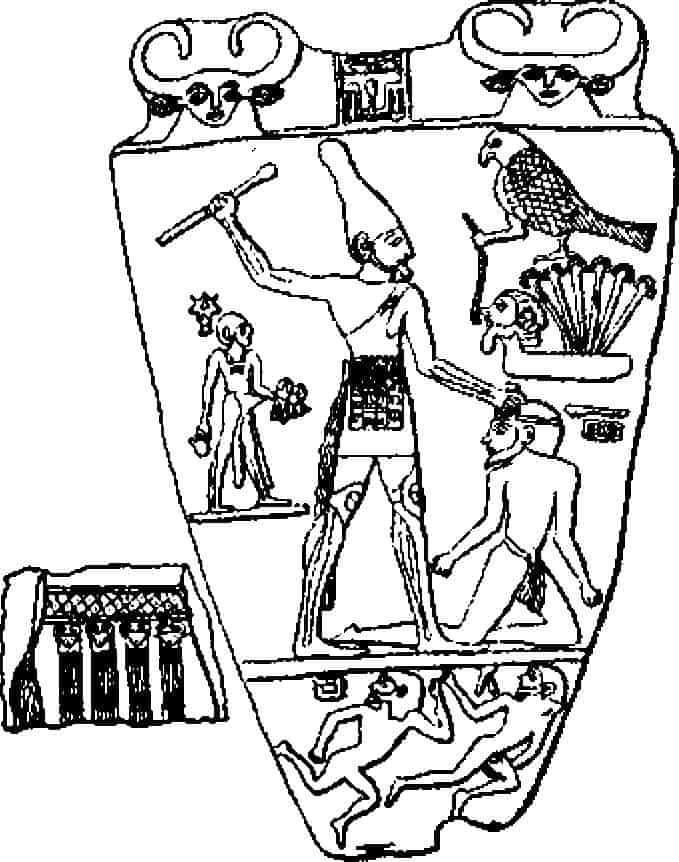

Dünya mitoloji ve dinlerinde etkili olan iki güçlü dürtü vardır. Bunlar birbirine benzemez. Tarihleri farklıdır, ilkini ve tarih sahnesine önce çıkanı, açıklanamaz cin işi korku veya mistik huşu yaratan düşünsel açıdan şaşkınlık verici yönüyle mucize diye adlandırabiliriz. İkincisi, kendini kurtarmadır: Parlaklığından tükenen bir dünyadan kurtulmak veya sıyrılmak.
Rudolf Otto Kutsallık Düşüncesi adlı önemli eserinde{55} dinsel deneyimin özü olan ve geleneksel teologlar tarafından ilahiyatla ilgili terimler içinde, Yüce Güç, Ruh, Akıl, Amaç, İyi Niyet, Benlik, Birlik vb. tanımlanamayan akıldışı etkenden söz eder.
Gerçekten, bu tür mantıklı terimler içinde ifade edilen inançlar dinsel deneyimi çoğaltmaktan çok dışlar. Ve aynı biçimde din veya mitoloji üstüne bilimsel bir çalışma, yalnızca bu tür kavramlarla ve onların tarihsel evrimiyle ilgilendiğinde konusunun özünü kaçırmaktadır. Çünkü Profesör Otto’nun yazdığı gibi:
“Eğer bize, insan deneyimine ait yanılmaz biçimde tek ve özel, kendine özgü bir şey sunan bir alan varsa, bu, dinsel yaşamdır. Gerçekten, bu bağlamda düşmanın, din taraflarından veya uzmanca bir tarafsızlık içinde olan kuramcıdan daha güçlü bir yaklaşım sergilediği çok olmuştur. Çünkü taraftarların kendileri çok iyi bilirler ki, bütün ‘mistik huzursuzluk’un ‘mantık’ veya ‘akılcılıkla’ bir ilgisi yoktur.
“Dolayısıyla dinin, ‘akılcı’ görünümlerin hiçbirinde tek başına yer almadığını ve tüm ayrıntılarıyla kapsanmamış olduğunu bilmek çok yararlı olacaktır. Ve dinin farklı ‘an’larını birbiriyle ilişkilendirerek bu durumu akılda tutmaya çalışmak, dinin yapısını daha açık biçimde anlamak için gerekli bir çaba olmalıdır.”{56}
Bu görüşü araştırmamızla ilgili düstur ve ödev olarak kabul ediyorum, yalnız ona, çekirdek Yakındoğu’daki ortak gelişmeyi izleyen dönemdeki yüksek kültürlerin tarihinde Doğu ve Batı dallarının birbirinden uzaklaştığını ve kutsalla ilgili deneyimlerindeki ‘an’ların da (veya belki “psikolojik aşamalar” diyebilirim) birbirinden ayrıldığını ekleyeceğim. Ayrıca büyük tersine dönüş adını vereceğim, Doğu ve Batı’da birçokları için kutsallık anlayışının evrenin ve kendisinin yaratılışlarıyla ilgili deneyimlerinden ayrıldığı, dayanılmaz bir günah, sürgün veya hayal olarak hissedilenden kurtulma özleminin egemen olduğu önemli andan sonra, iki dünyada kendini kurtarma yolları her bakımdan ayrışmıştır. Batı’da, geçen bölümde üstünde durduğumuz insan/Tanrı çelişkisine bağlı olarak acı, Tanrı’dan ayrılık olarak anlaşılmaktadır, bu suç, ceza ve kefaret duygularıyla birlikte gelişmektedir. Oysa Doğu’da kutsallığın içkinliği yanlış bir fikir yürütmeyle benimsenmiş olsa da, her şeyde mevcut kabul edildiğinden, anlayış psikolojiktir ve sonuç olarak kurtuluş yolları ve hayalleri doğaüstü bir babanın otoriter yönergelerine değil daha çok alternatif terapilere bağlıdır. Fakat her iki dünyada da kurtuluş için istek duyan ve çaba gösterenlerin coşkularına içtenlikle en bağlı olanlar olması, onlara acı verenin de tam tamına kendi varlıklarını aramalarından kaynaklanması işin ironik tarafıdır. Buddha’nın içindeki egoyu söndürdüğü anda dünyanın çiçeklere boğulduğunu okumuştuk. Fakat bu tam da dini -kurtuluş değil- mucize olarak gören kişilerin daima karşılaştığı biçimdir.
Çekirdek Yakındoğu’nun MÖ y. 4500’den kalma arkeolojik tabakalarından çıkarılan dişi heykelcikler dünyası, bize en eski neolitik çiftçi ve hayvancı toplumların mucizeleri üstünde odaklaşan ilk ipuçlarını veriyor. Heykeller kemikten, çamurdan, taştan veya fildişinden yapılmış; ayakta veya oturur biçimde; çoğunlukla hamileler ve bazen kucaklarında bebek var veya bebek emziriyorlar. Aynı arkeolojik tabakalarda bulunan seramik eşyalarda benzer simgelerin boyanmış olduğu görülmektedir. Bunlar arasında, özellikle ilgi çekici bir motif (Suriye-Kilikya kavşağında “Halaf seramiği” adı verilenlerde){57} önden görülen bir boğa başıdır, uzun kıvrık boynuzlan vardır - tanrıça toprak ananın, ölen ve dirilen ay-boğa tarafından döllendiği ünlü mitosunun o zamandan geliştirilmiş olduğu düşüncesini vermektedir. Bu mitosun tanıdık türevleri, Klasik Dönem’in sonundaki Europa ve Zeus Boğası, Pasiphac ve Poseidon Boğası, ineğe dönüştürülen İo ve Minator’un öldürülüşü efsaneleridir. Ayrıca Yakındoğu’nun en eski tapınak külliyeleri de (dünyanın da en eskileridir) boğa-tanrı ve inek-tanrıçanın dönemin önde gelen verimlilik simgeleri olduğu görüşünü güçlendiren kanıtlar sunmaktadır. Mezopotamya’nın güneyinde Obeid{58}, Uruk{59} ve Eridu’da{60}, biraz kuzeyde Bağdat’ın kuzey ve güneyinde Khafajah{61} ve Uqair’de{62}, daha uzakta Kuzeydoğu Suriye’nin Habur vadisinde Teli Brak’da{63} bulunan ve MÖ y. 4000-3500 yıllarına tarihlenen bu tür tapınaklar, Suriye-Kilikya kavşağının yaygın formunun (Taurean adı verilmektedir) yayıldığı geniş alanı ortaya koymaktadır. Bu altı külliyeden ikisinin tanrıçalara adandığı bilinmektedir: Obeid’deki Ninhursag’a ve Khafajah’daki İnanna’ya adanmıştır. Ötekilerin ilahları bilinmiyor. Ve külliyelerin üçü (Obeid, Khafajah ve Uqair’dekiler) iki sıra yüksek duvarla çevrilidir; duvarlar dişi cinsel organları çağrıştırır biçimde ovaldir (Şekil: 1).{64} Ana tanrıçaya adanan Hint tapınaklarında iç odanın dişilik organını temsil eden bir biçimde oluşu gibi, bu tapınaklar da doğanın üretici gücünü dişinin hamilelik ve emzirme yeteneklerine benzeten simgelerdi.
Şekil 1
Oval biçimli en eski tapınak külliyesi. Irak MÖ y. 4000-3500.
Her külliyede ana bina, sıkıştırılmış otuz santimden altmış santime kadar yüksekliği olan ve merdivenle çıkılan, çamurdan yapılma set üstüne yerleştirilmişti. Hepsi düzenli, kutu gibi, oldukça ‘çağdaş’ biçimde tuğladan inşa edilmiş, köşeler düzgün, çok renkli çini ve badanayla süslüydü. Oval külliye içindeki öteki yapılar rahiplerin odaları, hizmet alanları, mutfak vb. ve özellikle dikkat çeken sığır ağıllarıydı. Obeid harabeleri arasında bulunan çok renkli mozaikler rahipleri ilahi görevleri olan kutsal inekleri sağma, sütü süzme ve depolama işlerini yaparken gösteriyor ve daha sonra yazılmış birçok metinden bu tapınakta tapınılan tanrıçanın, evrenin ve insanların, hayvanların ve tanrıların tanrıçası Ninhursag’ın, özellikle kutsal sütüyle beslediği özel koruyucusu ve bekçisi bulunduğu kralların tanrıçası olduğunu ve sütün, dünyada işlevini aracılıklarıyla yürüttüğü hayvanlardan alınan gerçek süt olduğunu biliyoruz.
Bugüne kadar Hindistan’da tanrıça tapınaklarını ziyaret eden herkese, tanrıçanın ‘nimeti’ (prasad) olarak ritüel biçimde dağıtılan sütlü pirinç veya benzeri süt ürünü bir yiyecek olmuştur. Ayrıca, Güney Hindistan’da, Nilgiri tepelerinde, şaşırtıcı Toda kabilesi vardır; komşularıyla soy bağlılığı bulunmayan bu kabilenin küçük tapınak külliyeleri süthanedir; tapındıkları hayvanları burada saklarlar ve en önemli kurbanlarını, ana tanrıça Togorş’un simgesel oğlu danayı sunarlarken söyledikleri dualarda Ninkursag sözcüğü geçer ve bunun anlamını bilmezler.{65} Obeid’in Ninhursag ve Khafajah’ın İnanna tanrıçalarının kraliyete ait sığır ağıllarında, İran’ın doğusunda tarımcı-hayvancı uygarlığın ilk işaretlerinin görünmesinden bin beş yüz yıl önce çanların, dalgalanan ışıkların, duaların, ilahilerin ve kurban ineklerinin böğürmelerinin senfonisi ritüel olarak başlamıştı ve çağlar içinde Hindistan’daki tanrıçaya kadar ulaştı:
Ey Anne! Dünyanın Nedeni ve Annesi!
Sen Tefe Ezeli Varlıksın,
Sayısız yaratığın Annesi,
Tanrıların Yaratıcısı: Yaratıcı Brahma’nın,
Koruyucu Vişnu’nun ve Yıkıcı Şiva’nın bile!
Ey Anne, seni öven ilahiyi söylemekle dilimi temizliyorum.
Ayın yalnız beyaz gece lotuslarından hoşlanması,
Güneşin yalnız gündüz lotuslarından hoşlanması gibi,
Ve bir şeyin yalnız belirli bir şeyden hoşlanması gibi,
Sen de Anne, tek başına bütün evrenin Bakışlarından
hoşlandığısın.{66}
MÖ y. 3500’lerden kalma Sümer silindir mühürlerinden birinde (Uruk dönemi, A tabakası: alfabenin bulunmasından hemen önceki dönem) iki yabani koçun bir yükseltinin kenarında birbirlerine dönmüş oldukları ve yükseltinin yanından onları ısıracakmış gibi iki başlı yılanın yükseldiği resmedilmiştir (Şekil: 2). Burunları üstünde bir çiçek vardır ve sırtlarında silindirin öteki yüzünde tamamlanan pençe atmış kartal görülmektedir. Profesör Henri Frankfort silindir üstüne çalışmasında görülen bütün öğelerin, ölen ve dirilen tanrı Tammuz’un (Sümerce Dumuzi) mitolojisine ait daha sonraki kült ve sanatla ilişkili olduğunu bildirmiştir. Tammuz, birçok ad taşıyan, İnanna, Ninhursag, İştar, Astarte, Artemis, Demeter, Afrodit, Venüs, ana tanrıçanın hem bakire doğumla doğmuş oğlu hem eşi, Klasik Çağın Adonis’inin prototipidir.{67} Resimdeki yükseklik Eski Dünya’da daima tanrıçanın simgesi olmuştur. Klasik çağın merkez - göbek ve ilk Buddhistlerin kutsal eşyaların saklandığı tepecikleri (stupa) ile aynı köktendir. Büyütüldüğünde, tepesinde tanrıların yaşadığı parlak kentin, altında sular taşan uçurumların bulunduğu, ikisinin arasında yaşam aşamalarının yer aldığı tanrılar dağıdır (Yunan’da Olimpos, Hint’te Meru). Hepsine güç veren ana tanrıçadır. Sürülen toprakla ve yıldızlarla süslü göklerde tanındığı gibi mühürde de hem yükselti olarak görünmektedir hem de arka planda ve üst ve yükseltinin içinden çıktığı alt kenarda yer alır.
Bu tepecikten yükselen yılan koçları ısırmak üzeredir ve koçlar, buna karşılık çiçeği yemeye hazırlanmaktadır. Arkaya döndüğümüzde avcı kuşun atıldığını görürüz. Öldürmeye ve öldürülmeye dayanan yaşam çemberi çizilmektedir. Ve bütün figürler aynı tanrıyı temsil ettiğine göre anlatılan mitolojik konu, kendi kendisini yiyen, hep ölüp yeniden doğan, her şeye yaşam ve ölüm veren yaratıcı güçtür.
Şekil 2
Kendini yiyen güç; Sümer, MÖ y. 3500
MÖ y. 3500’den kalma ikinci bir Sümer mühüründe belki de tanrıyı simgeleyen bir rahip göğsünde bir ağaç tutuyor, ağacın iki kökü dört yöne uzanıyor (Şekil: 3). Hayvanlar bu resimde açıkça ağacın meyvelerini yemekteler; mühürün öteki tarafında ise iki saz demeti arasında bir dana bulunuyor. Saz demetleri bu sanatta daima tanrıçanın kutsal tapınağına açılan kapıyı temsil eder. Dana orada kurban edilmek için bulunuyor ve sanki rahmin içindeymiş gibi güven içinde görülüyor. Hıristiyanlıkta da İsa, Kurbanlık Kuzu, Jesse Ağacı’nın meyvesi, Bakire Anne’nin rahmindeyken çoktan gerçekte çarmıha gerilmiş kabul edilir; doğum-ölüm birleşimi Sümere benzetilebilir.
Şekil 3
Yaşamın Efendisi: Sümer, MÖ y. 3500
En eski dişi heykelciklerin tarihi olan MÖ y. 4500 ile 2. ve 3. şekillerdeki mühürler arasında bin yıllık bir aralık vardır; arkeolojik kanıtlar bu zaman içinde, sürülen toprağın en son geliştirilen en soylu ağıl hayvanı -boğa- tarafından döllenmesine ilişkin kültün işaretlerinin arttığını ortaya koymaktadır. Boğa, yalnızca süt veren ineklere efendilik yapmakla kalmamakta, geçmiş dönemde toprağı süren ve tohumlayan sabanı da çekmektedir. Ayrıca, analoji yoluyla, boynuzlu ay, rahmin, yağmurların ve çiğin ritminin efendisi boğayla eş tutulmaktadır. Böylece, hayvan kozmolojik bir simge haline gelmekte, yer ve göğün alanlarını ve yasalarını birleştirmektedir. Ve varlığın bütün gizemi böylelikle inek, boğa ve danalar metaforuyla şiirsel biçimde ifade edilmiş olmaktadır; bu hayvanlar eski tapınak külliyelerinde - simgesel olarak kozmik tanrıça İneğin kendi rahmi olan kutsal yerlerde ayin konusu olmaktadır.
İzleyen bin yıldaysa, temel köy kültürü gelişmiş ve özellikle aşağı Mezopotamya’da şehir devletleri uygarlığı yayılmıştır. Sir James G. Frazer’in Altın Dal’da örnekleriyle göstermiş olduğu gibi, kozmik kurbanın şiirsel ayini artık öncelikle krallar üstünde uygulanmaktadır. Krallar, bazen maiyetleriyle birlikte periyodik olarak kesilmektedirler. Çünkü artık en son geliştirilen, en etkileyici, yüceltilen yaşam süthanede değil, saraydadır. MÖ y. 3200’de yazı sanatı icat edilmiştir (Uruk dönemi, B tabakası); tapınak - kent kesin olarak köyün yerini almıştır ve uygarlığın kılavuzluğu tam-zamanlı, profesyonel rahip kastının elindedir. Yıldız gözlemleriyle gözle izlenebilen beş gezegenin hareketi (Merkür, Venüs, Mars, Jüpiter ve Satürn), daha önce sabit yıldızlar arasından saptanmış ay ve güneşin yörüngeleriyle birlikle tanımlanmıştır (tamamı yedi yolcu ediyor); tapınak-kentin yaşamını semavi yasalara göre düzenleyebilmek için matematik olarak doğru bir takvim geliştirilmiştir ve sayısız kaynaktan öğrendiğimize göre, devlet düzeni kavramı bu semavi yasalarla o derece özdeşleştirilmişti ki, ayın ölümü ve yeniden dirilişi, yıl çemberi ve matematik olarak önceden belirlenebilen kozmik çağların daha büyük devirleri, olanaklı olabildiği kadarıyla sarayın ritüelinde taklit edilmiş, kozmik ve toplumsal düzenlerin bir olmasına çalışılmıştır.
MÖ 2300’den kalma iki Sümer mühürü, sarayın simgesel yeni düzenini anlatmaya yetecektir. Birincisi (Şekil; 4) Lagaş kentinin harabelerinden çıkarılmıştır, sırtüstü yatan bir erkeğin üstüne oturmuş çıplak bir kadını göstermektedir. İkinci bir erkek kadının kolunu tutmuş, onu sopa veya kamayla tehdit etmektedir. Sahnenin sağındaki yazının ilk iki satırı hasar görmüştür. Sonraki satırda şunlar okunmaktadır: “Ghisgalla Kralı” -Ernest de Sarzec’in keşfettiği gibi anlatılan “aynı yerin öteki metinlerinde ‘kral-tanrı’ veya ‘tanrı-kral’ olarak adlandırılan İlah”-dır.{68} Ghisgalla’da kozmik tanrıçanın tapınağı vardı ve burada gördüğümüz anlaşılan rahibe ve kralın eşleştirilerek ritüel biçimde kurban edilmesidir.{69}
Şekil 4
Kurban: Sümer, MÖ y. 2300
İkinci mühür (Şekil: 5) aynı konuyu işlemektedir, kadın gene erkeğin üstündedir. Profesör Henri Frankfort’un sözleriyle “ritüel evliliği” temsil etmektedir: “çeşitli metinlere göre, tanrı ve tanrıça Yeni Yıl Festivali sırasında evlenmekte, hemen peşinden bütün halkın katıldığı şölenle ritlerin tamamlanması güvence altına alınmaktadır... İkiliyi taşıyan divanın hayvan biçimli ayakları vardır, ya aslan pençeli veya boğa toynaklı olurlar. Alttaki akrep, aşk tanrıçası İşara’yı simgeliyor olabilir{70} ve divanın ayağındaki figür... ayini yöneten rahiptir; İdin Dagan zamanında [Isin kralı, MÖ y. 1916-1896]{71} anlatılan ayinde, tanrı ve tanrıçayı evliliklerinden önce arındırdığı belirtilmektedir...
Sahne... kral veya yerine geçen biriyle bir rahibe tarafından yerine getirildiğini bildiğimiz bir ritüelin bir bölümüdür. Tanrı’nın ölümü ve dirilişi, peşinden tanrıçayla yeniden birleşmesini temsil etmektedir. Gudea’nın festival anlatımında evliliğin gerçekleşmesinden sonra tanrıların, yöneticilerin ve halkın birlikte katıldıkları bir şölen verildiği anlatılmaktadır;{72} [mühürde solda] ritüel evliliğin tamamlandığı divanın yanında gerçekten de ağızlıklarıyla bir küp durmaktadır.{73}
Şekil 5
Ritüel Yatak: Sümer, MÖ y. 2300.
Şölen sahnesini anlatan birçok mühür vardır. “Şölene katılanlar -çoğunlukla bir kadın ve bir erkek- büyük bir küpün iki yanında, küpün ağızlarından emerken birbirlerine bakmaktadırlar ve Eski Yakındoğu’da bira içmenin olağan yolunun bu olduğu anlaşılmaktadır.”{74} Bu tür birçok mühür Ur kral mezarlarındaki iskeletlerin yanında bulunmuştur ve 4. ile 5. şekillerin ait olduğu dönemde yaşam-ölüm ritüelinin gerçekleştirildiğine ilişkin yeterince kanıt oluştururlar. Bu büyüleyici mezarların anlatımı İlkel Mitoloji cildimizde yer aldığından, burada yinelemeye gerek yok;{75} fakat özet olarak, ay-tanrısının kentindeki tapınak külliyede, Sir Leonard Woolley, yirmilerin başlarında hepsinin krallara ait olduğu anlaşılan on altı kadar mezarı ortaya çıkarmıştır. Bunların en etkileyicilerinden biri ‘Şub-ad’ adlı bir hanımla, efendisi A-bar-gi’nin çifte mezarıdır. Erkeğin ölüm odasında altmış beş insan ve her biri üç öküzle çekilen iki araba, süsler içindeki kraliçenin veya rahibenin hemen aşağısında bulunmaktadır; kadın, yirmi beş insan ve iki katır tarafından çekilen bir kızakla efendisine öteki dünyaya giden yolculuğunda eşlik etmiştir. Böylelikle, ölü tanrı Dumuzi’nin peşinden öteki dünyaya giden ve onun dirilmesinde etkin olan tanrıça mitosu doğrulanmış olmaktadır.
Şub-ad’ın iskeleti kiremitten yapılmış kemerli bir kubbe altında ahşap teskere üstünde yatmaktadır. Elinde altın bir kap vardır, belki de ölüm şerbetini bundan içmiştir. Yanındaki taç, Lapis-lazuli boncuklarla işlenmiş yumuşak beyaz deriden bir şerittir, üstünde bir dizi nefis çizilmiş hayvan yer almaktadır: Erkek geyikler, gazaller, boğalar ve keçiler, aralarında üç nar salkımı, bir başka ağacın meyveli dalları ve aralarda altın rozetteler. 2. şekildeki mühürle olan benzerlik ortadadır. Gümüş sarılmış inek başı yerde yatmaktadır. Yandaki odada, efendisine eşlik eden müzisyen kızların kemikleri arasında iki harp vardır; biri bakır biri altın, boynuz uçları, gözleri ve sakalları lapis-lazuli ile yapılmış boğa başlarıyla süslenmiştir.
Şub-ad’ın odasındaki gümüş inek ve A-bar-gi’nin odasındaki altın sakallı boğa, kozmik tanrıça İneğin iki bin yıl geride kalan süthane tapınaklarına, eski dişi heykelciklere ve mitolojik ay boğasının uzun kıvrık boynuzlarının boyandığı seramik kapların dönemine işaret etmektedir. Profesör Anton Moortgat, uygarlığın doğduğu bu iki bin yıl üzerine araştırmasında, “ana tanrıça ve kutsal boğa -tarımcı köy kültürünün en eski belirlenebilir, tanımlanmış, ruhsal ifadeleri- Yakındoğu’da binlerce yıl biçimini koruyup devam edecek olan düşünceyi temsil eder” der.{76} Yalnızca Yakındoğu’da değil diye ekleyebiliriz. Çünkü uygarlık yaratıcılarının mucize odağı olan bu en eski simgelerde ifadesini bulan resimli motifler, bir bakıma çağdaş Doğu ve Batı’nın son teolojilerinde bile yaşamlarını sürdürmektedir. Şarkılarının yankısını şimdi dünya uygarlığımızın şafağında en önemli yeri tutan bütün bu mitolojik geçmişte duyacağız. En eski neolitik biçimleri çok basit olsa da, müzikleri büyük ve zengin bir fortissimo olarak gelişmiş ve MS y. 500-1500 yılları arasında İrlanda’dan Japonya’ya kadar tam bir katedral konserine ve tapınak sanatına dönüşmüştür.
Rudolf Otto’nun görüşüne katılarak, mitolojinin ve dinin kökenini esrarlı olanın yakalanması olarak kabul edeceğim:
“Bu zihni durum tam anlamıyla sui generistir ve başka bir şeye indirgenemez; dolayısıyla, bütün mutlak ilke ve birincil veriler gibi tartışılabilir, fakat kesin biçimde tanımlanamaz. Bir başkasının anlamasına yardımcı olabilmek için yalnızca bir tek yol vardır. Konu, ‘esrarlı olanın’ onda zorla devinime başlayana, yaşama geçip bilincine çıkana kadar, kendi zihnine uygun biçimde değerlendirip tartışabilmesi için yönlendirilmelidir. Bu süreçte, zihninin öteki bölümlerindeki bildik ve tanıdık olanları, ortaya çıkarmak istediğimiz deneyimle benzeşmesi veya belirli bir zıtlık oluşturması için canlandırmakta işbirliği yapabiliriz. Sonra eklemeliyiz: “Bu bizim x deneyimimiz tam olarak bu deneyim değil, fakat ona yakın ve ötekine zıt. Artık kendin, nasıl bir şey olduğunu kavrayamıyor musun?” Yani kesin konuşulduğunda bizim x’imiz öğretilemez, fakat dürtülüp zihinde uyandırılabilir; ‘ruhtan’ gelen her şeyin uyandırılması gerektiği gibi.”{77}
Tapınağın simgeselliği ve mitosun atmosferi, bu anlamda esrarlı olan için katalizatördür ve güçlerinin sırrı da buradadır. Fakat simgelerin özellikleri ve mitosların öğeleri ilişki yoluyla kendi başlarına güç kazanma eğilimindedir. Bunun sonucu olarak esrarlı olanın kendisine ulaşmayı engelleyebilir. Ve imgeler kendi içlerinde nihai terimlermiş gibi sunulduğunda gerçekten de engellenmiş olur. Dogmatik bir amentüde, örnek olarak olan budur.
Böyle bir formülleştirme, Dr. Carl G. Jung’un çok iyi gözlemlediği gibi, “kişiyi Tanrı’yla doğrudan deneyim içine girmekten korur, yeter ki kendisini zarar verici biçimde bu işe atmasın. Eğer evini, ailesini terk eder, uzun zaman yalnız başına yaşar, karanlık aynanın derinliklerine gözlerini çok dikerse o zaman korkunç karşılaşma olayı başına gelebilir. O zaman da yüzyıllardır olgunlaştırılmış olan geleneksel simge sağaltıcı soluk gibi işlev görebilir ve yaşayan mabutun son saldırısını, kilisenin boşaltılmış mekânlarına çekebilir.”{78}
İnsanlığın avcılıktan tarıma ve hayvancılığa geçişiyle yaşanan kökten değişimle eski mitolojik benzetmeler gücünü yitirmiş; MÖ y. 3500’lerde, gezegen ışıklarıyla neredeyse kavranılamaz biçimde belirlenmiş olup matematik olarak hesaplanabilir kozmik düzenin tanınmasıyla karşısına çıkılması olanaksız yeni, doğrudan etkileyici bir mucize yaşanır olmuştu. Etkileme gücü o zamanın ritlerinin yapısından anlaşılabilir. Altın Dal’da Frazer, kral öldürme ritini akılcı, pratik bir önlem, pratik olarak bakıldığında toprağın büyüsel biçimde döllenmesi olarak yorumlamıştır ve uygulamanın bu amacı taşıdığına kuşku duyulamaz. Bütün dinsel tapınmalarda dua genel olarak Tanrı’dan istenilen nimetlerin elde edilmesi için yapılır. Fakat bu tür büyüler ve dualar, konunun özüne Frazer’den daha yakın otoritelerin evrensel olarak dinde mevcut olduğunu bildirdikleri gizem deneyiminin özelliklerini temsil etmezler. Gizemli olana karşı korunması bizden daha az olan eski insanın ona karşı bağışıklık kazanmış bir zihni olabileceğini ve sonuç olarak savunmasız olmasına karşın, gizemin yakalaması için iyi bir özne olmak yerine bir tür ilkel toplum bilimci olduğunu varsayamayız. Profesör Otto “dinsel psikolojiyi, yeni yetmeliğinin duyarlılıklarını, hazımsızlığın rahatsızlıklarını veya toplumsal duyguları anımsamaya çalışıp gerçek bir dinsel duygu anımsamayan biriyle tartışmak hiç de kolay değil” diyor.{79} Okuyucumun böyle bir şampiyon olmadığını varsayarak, bu konuda daha fazla görüş bildirmeyeceğim. Fakat MÖ y. 4500-2500’lerde daha önce görülmemiş kutsallıklar burcunun -kutsal eylemler ve kutsal şeylerin- ortaya çıkmasının fasulye büyütmekle ilgili yeni bir kurama değil, şimdi bile çok güzel biçimde maskelenmiş olsa da hepimizi etkileyebilecek olan mysterium tremendumun derinliğine yaşanmış olmasıyla ilgili olduğuna emin olun.
Büyük Sümer tapınak külliyelerinde ortaya çıkmış olan yeni sanat ve fikirler sistemi MÖ y. 2800’de Mısır’a, 2600’de Girit’e ve İndüs’e, 1600’de Çin’e ve izleyen bin yıllar içinde Amerika’ya geçti. Fakat yeni uygarlığın öğelerinin çevresinde oluştuğu dinsel deneyim yayılmadı, yayılamazdı. Yarattığı etkilenme değil, ilahiyatı ve ilgili sanatları rüzgâra kapılıp gitti; ve bunlar başka amaçlar için uygulandı, yeni coğrafyalara ve ritüel olarak kurban edilen Tanrı-kralların psikolojik yapılarından çok farklı yapılara uyarlandı.
Örnek olarak MÖ y. 2800-1800 dönemi dünyanın en iyi belgelenmiş mitolojisi olan Mısır’ı ele alabiliriz. Frazer ölen ve dirilen Tanrı Osiris’in Tammuz, Adonis ve Dionysos’la pratikte aynı denebilecek kadar benzeştiğini göstermiştir. Hepsi tarihsel gelişimlerinin kökeninde öldürülen ve dirilen kutsal kral ritiyle ilişkilidir. Ayrıca, son arkeolojik buluntular kutsal bir kral tarafından yönetilen devlet düşüncesinin yayıldığı en eski merkezin Mezopotamya olduğunu kanıtlıyorlar. Osiris mitosu ve kızkardeşi-eşi İsis mitosu, dolayısıyla Mısır’ın son neolitik, İlk Bronz Çağına ait yaygın bir temadan geliştirdiği türevler olarak anlaşılmalıdır.
Dr. E. A. Wallis Budge, öte yandan, Mısır dini üstüne birçok çalışmasında Osiris mitolojisinin Afrika kökenli olduğunu ileri sürmektedir.{80} Profesör John A. Wilson ise, daha yeni olan araştırmasında, “dış temasların iki yanda da yenileştirici etkileri olmalıdır” görüşünü ifade ederken, Mısır mitoloji ve uygarlığının biçimlenmesinde “uzun bir tarihe sahip ve yavaş değişen” yerli Nil kültürünün gücünü ileri sürmektedir.{81} Yerliye karşı yabancı tartışması iki sorunun da - veya aynı sorunun iki yönünün de- kuşkuyla karşılanması gerektiği anlaşılınca ortadan kalkmaktadır. Çünkü konuya geniş bir bakış açısıyla bakılır bakılmaz, oturmuş bir kültürel yapıya yeni bir düşünce sistemi veya uygarlığın geldiği her yerde bunun edilgen biçimde değil yaratıcı biçimde alındığı hemen görülecektir. Yeni biçimlerin duyarlı, karmaşık bir seçicilikten geçirilmesi, uyarlanması ve geliştirilmesi, yerli kalıtımla benzerlik veya uyum gösteren yönlerle hemen ilişki kurulması ve bazı oluşumlarda -özellikle Mısır’da, Girit’te, İndus Vadisinde ve biraz daha sonra Uzakdoğu’da- yerel yaratıcılığın etkili göçünün yerel biçem üstünde, fakat yeni aşama düzeyinde kendini göstermesi dikkatten kaçırılmamalıdır. Yani belirli bir zamanda kültürel aşamanın yabancı etkilerle geliştirilmiş olduğu gösterilebilse bile, her büyük bölgenin özel biçeminin yerli olduğu da aynı güvenlikle gösterilebilir. Daha çok yerel biçimler üstünde çalışan bilim adamının yerel, biçeme bağlı özgünlük iddiasında bulunmaya eğilim gösterirken, yayılan teknikler, sanatlar ve mitolojik motifler üstünde çalışanın, insanlığın pek iyi tanımlanamayan yerel biçemler üretmiş olmasına karşın iyi tanımlanabilen belirgin aşamalardan geçmiş tek kültürel tarihi olduğunu düşünmeye eğilimli olması bundandır. Bütün yüksek uygarlıkların temel mitolojik kalıtımının kökenini ve yayılımını çözümlemek başka şeydir, bazı yerel mitolojik biçemlerin kökenini, olgunlaşmasını ve son bulmasını araştırmak başka şey; üçüncüsü de, insanlık tarihi bağlamında her yerel biçemin gücünü saptamak olabilir. Mitoloji bilimi eksiksiz olabilmek için, mümkün olduğu kadar üçüne de yer vermelidir.
Mısır’ın karakteristik sanat özelliklerini sergileyen bilinen en eski sanat eseri iki yanında da fetihçi bir firavunun resmi bulunan oymalı adak taşıdır (Şekil 7 ve 8). Eserin bulunduğu yer Yukarı Mısır’da Hierakonpolis’tir, burası güneş-şahin Horus’a bağlanmış bir kral soyunun taç giydiği yer olarak görünmektedir. MÖ 2850’lerde bu krallar kuzeye, Aşağı Mısır’a ilerlemiş, iki ülkeyi birleştiren ilk hanedanı oluşturmuşlardır. Aynı yerde bulunan ikinci bir eser, toprak altında yapılmış tuğla döşeli türbe-mezardır. Avcılık, gemicilik ve savaş sahneleriyle bezenmiş duvarlarından biri, son dönem neolitiğe ait resimli kaplar yanında oldukça çocuksu kalmaktadır (Şekil 6).{82} Bu mezar, Mısır biliminin bildiği en eski duvara sahip olmasının dışında, o dönemde Mezopotamya’nın bataklıklarından getirdiği yeni düşünceleri yansıtması açısından tuğlalarıyla da çok dikkat çekicidir.
Şekil 6
Hierakonpolis’de morg duvarı, Mısır, MÖ y. 2900
Mısır’ın daha eski mezarları basitçe açılmış çukurlardır; yuvarlak köşeleri olan dikdörtgenler veya daha küçüklerde oval çukurlardan ibarettir. Göne veya gevşek biçimde ketene, bazen ikisine de sarılan gövde başı güneye, yüzü batıya dönük, çevresine seramik ev eşyaları dizilmiş biçimde yatırılır ve çukur doldurulup artan toprak üstüne kurban-adakların konulabildiği ufak bir yükselti yapacak biçimde yığılırdı.{83} Oysa tuğla yer altında toprak dolmayan oda yapma olanağı veriyordu (altyapı); üstteki tepe de yükseltilebilir, hatta kocaman, tuğladan yüzleri olan mastabaya dönüştürülebilirdi (üstyapı). Bunların ikisi de, altta yatan insan için bir anıt ve ölüm kültünün şapeli olarak hizmet eder. Fakat bu tür yapılar taş kadar dayanıklı olamaz. Profesör George Reisner ilk Mısır mezarlarına ait önemli eserinde, “Bu türden önemli yapıların son yarım yüzyılda birkaç yıl içinde yok oldukları görülmüştür” demektedir.{84} Yani zamanla mastabalar yok olmuş, kralların yeraltında sonsuza kadar uykuya dalmış oldukları odaları soyulmuş ve çatlayan çatılardan içeri toprak dolmuştur.
Hierakonpolis’deki odanın boyutları epey büyüktü: Dört-beş metre uzunluk, iki metre genişlik, bir buçuk metre derinliğindeydi; alçak bir bölmeyle ikiye ayrılmıştı. Döşeme ve duvarlar yirmi x on x sekiz santimetrelik pişmemiş tuğlayla döşenmiş, çamur harçla sıvanmış, sarı boyanmıştı. Üst duvarları çöl tarafından süpürülmüştü; içindekiler de kaybolmuştu.{85} Fakat resimler kalmıştı. Resimlerdeki yüksek tekneli gemiler etkileyicidir: Mezopotamya tarzıdır. Ayrıca, birçok figür arasında, iki hayvanı çekip şaha kaldıran bir adam üstünde durmak gerekir (sol altta dördüncü figür); omuzunun üstünde atlı karınca gibi beş antilop, sağdaki uzun geminin öteki tarafında yüzleri ters yönlere, yukarı ve aşağı dönük, bacakları bitişik iki antilop daha vardır. Bütün bu motifler Mısır’a Güneybatı Asya’dan gelmiştir, orada MÖ y. 4500’lerden beri resimli kaplar üstünde (Samarra seramiği) çiftlik hayvanı olarak görülmektedirler.
Mezopotamya’dan gelen kültürel etkilerin açık etkisinde kalmış olmasına karşın,{86} gene de Narmer levhası dönemindeki Mısır sanatı, bildiğimiz kadarıyla öncesi olmadan, taş oymacılığında üstün bir işçilik ve biçem gösterir, bunun yanında nitelikleriyle kuşkulanılmayacak biçimde kendine ait gelişmiş ve oturmuş bir mitoloji sunar. Resmi çizilen monark firavun Narmer’dir; bugün birçok bilim adamı onun Menes’le,{87} MÖ y. 2850’de Yukarı ve Aşağı Mısır’ı birleştiren firavunla aynı kişi olduğunu düşünüyor.{88} Ve levhada canlandırılan olayın Kuzey’in fethi olduğu ortadadır.
Tarihin babası Herodot (MÖ 484-425) şunları yazar: “Rahiplerin bana anlattıklarına göre, Mısır’ın ilk kralı Menes şunları yapmıştır: Önce Memphis’i koruyan bendi yaptırmıştır. Irmak eskiden Libya tarafındaki kum dağı yönünde akıyormuş, Menes, Memphis’in aşağı yukarı yüz stad kadar yukarısında ve ırmağın güney kolu üzerinde bir bent ördürterek eski yatağı kurutmuş ve ırmağın iki dağ arasından geçmesi için yeni bir kanal kazdırtmıştır... İşte bu Menes, ki Mısır’ın ilk kralıydı, ırmağı başka yana aktarıp bu toprakları kazandıktan sonra, burada bir kent kurmuştur; bu kent şimdiki Memphis’tir; Memphis bugün de Mısır’ın dar bölümündedir. Bunun arkasından, kentin dışında, kuzey ve batı yörelerinde (zira doğuyu Nil kapatmaktadır) ırmaktan beslenen bir göl kazdırtmıştır.”{89}

Şekil 7
Narmer levhası (önyüz), Mısır, MÖ y. 2850
Narmer levhasının iki yüzünde de, üst bölümlerde, köşelerde inek-tanrıça Hathor’un koca boynuzlu iki başı yer almaktadır; toplam baş sayısı dörttür. Gök katları dört tanedir ve tanrıça dört defa gösterilerek ufku çevrelediği anlatılmak istenmiştir. Tanrıça Ufukların Hathor’u olarak bilinir ve kutsal hayvanı inektir -fakat Sümer sütçülük tanrıçası Ninhursag kültündeki gibi evcilleştirilmiş inek değil, bataklıklarda yaşayan yabani inek{90}-. Böylece, bölgesel bir farklılık olduğu görülüyor; iki kült, bilgince incelendiğinde aynı değildir. Fakat aydınca incelendiğinde gerçekte ikisi aynıdır; neolitik kozmik inek tanrıçalarıdır. Hathor öyle durmaktadır ki, dört bacağı dört bucağın sütunlarıdır. Karnı gök kubbedir. Ayrıca güneş, altın güneş şahini, tanrı Horus doğudan batıya uçarak her akşam onun ağzına girer, ertesi şafak tekrar doğar. Horus, böylece “annesinin boğası”, kendi babasıdır. Adının anlamı hathor “Hor’un evi” olan kozmik tanrıça da, böylelikle aynı anda alıcı kuş olan kendini doğuran tanrının eşi ve annesidir.{91} Baba yönüyle, ulu boğa tanrı Osiris’tir ve yaşayan firavunun ölü babasıyla özdeşleştirilmektedir. Oğul yönüyle, şahin, Horus, şimdi tahta çıkan yaşayan firavundur. Fakat öz olarak bu ikisi, yaşayan ve ölü firavun, Horus ve Osiris aynıdırlar.
Mısırcada, ayrıca, Profesör Frankfort’a göre, “‘ev’, ‘kent’, ‘ülke’, annenin yerini tutan simgeler olabilmektedir.”{92} Yani ‘Horusun evi’, inek tanrıça Hathor, yalnızca evrenin değil Mısır’ın da, sarayın, yaşayan firavunun annesinin de düzenleyici gücüdür ve gördüğümüz gibi evde yaşayan, kendisini doğuran yalnız o değildir, babası da aynıdır.
Elbette firavun, basitçe ölümlü bir varlık olarak düşünülürse bütün bunlar biraz karışık gelecek. Firavun şu zaman doğmuş, filan işleri yapıp MÖ yaklaşık filan zamanda ölmüş biri değildir. Bu firavun, böyle tanımlandığında mitolojinin ilgilendiği firavun değildir. Bu, kendi annesinin boğası olan şahin değil. Firavunluk ilkesi, büyük harf F ile Firavun, ölümlü değil ebedidir. Yani mitolojinin ve simgeciliğin söz ettiği daima bu Firavun’dur; tarihleri, hanedanları ve öteki tarihsel olayları yazarken adı geçen ölümlü firavunlarda yeniden yaşam bulan da odur.
Ölümsüz bir özün ölümlü insanlardaki ardışıklığından söz etmek cesaret isteyen bir niteleme; fakat o günlerde çılgınlık insanı değil, kostümünü ön plana atan ve bizim tiyatroda yaptığımız gibi, onun giyilmesiyle yetinen bir durumdaydı. Ödevi yüklenen, artık kendi isteğine göre değil rolünün gereğine göre hareket etmek zorundaydı, “böylelikle yazılanlar gerçekleştirilecekti”. Thomas Mann’ın ‘yaşayan mitos’ konusunu bir tartışmada çok güzel açıkladığı gibi, “antik çağda ego ve kendine ait bilinci bizimkinden farklıydı, dışa kapalılığı daha azdı, o kadar kesin tanımlanmış değildi. Arkası açık bırakılmış diyebileceğimiz bir biçimdeydi, geçmişten çok şey devralıyor ve yineleyerek ona yeniden mevcudiyet kazandırıyordu.” Böyle kesin biçimde farklılaştırılmamış ego kavramıyla: “‘Taklit’ sözcüğün bugünkü anlamından çok daha fazlasını anlatıyordu. Bu mitik özdeşleşme demekti... Yaşam veya en azından belirli bir yaşam, mitosun et ve kemik bulmasıyla yeniden inşa ediliyordu; mitosa bağlıydı ve mitosla anlam kazanıyordu. Ancak mitosla, geçmişe yaptığı göndermeyle kendisini gerçek ve belirli görebilirdi.” Ve yaşamı mitos olarak, alıntılama olarak koyan bu görkemli oyunun sonucu olarak zaman ortadan kalkmış, yaşam festival haline, maske haline gelmişti: Tanrıların prototiplerini oynayan aktörler olarak rahiplerin ürediği sahne, örnek olarak, ölen ve dirilen Osiris’in yaşamı ve acıları.{93}
Narmer levhasındaki firavun, dolayısıyla belirli bir zamanda, günde, mekânda, Mısır ülkesinde tarihsel olayları gerçekleştiren biri olmasına karşın, yalnızca başarılı savaşlar yapmış bir kral olarak değil, ebedi biçimin tarihte kendini gösterişi olarak da tanınmaktadır. Bu biçim “gerçek” veya “doğru düzen” (maat) olarak bilinir ve yaşantısıyla kendisini gerçekleştiren krala da destek olur.
 Gerçek, doğru düzen (maat), mitolojik olarak inek-tanrıça Hathor kişiliğinde canlandırılan ilkedir. Ebedi dünyayı ayakta tutan ilke odur: Aynı anda dünyayı biçimlendiren, dünyada işlev sahibi olan analık gücüdür, gerçekleşen tanrıyı doğurur, hem de onun eylemiyle üretkenliğinin meyvesini verir. Tanrı’nın annesinin boğası olduğunun söylenmesinin nedeni budur. Narmer levhasında mitoloji konusu yapılmış olan tarihsel olayın, tanrıça Hathor’un dört görüntüsüyle sarılmasının nedeni de budur.
Gerçek, doğru düzen (maat), mitolojik olarak inek-tanrıça Hathor kişiliğinde canlandırılan ilkedir. Ebedi dünyayı ayakta tutan ilke odur: Aynı anda dünyayı biçimlendiren, dünyada işlev sahibi olan analık gücüdür, gerçekleşen tanrıyı doğurur, hem de onun eylemiyle üretkenliğinin meyvesini verir. Tanrı’nın annesinin boğası olduğunun söylenmesinin nedeni budur. Narmer levhasında mitoloji konusu yapılmış olan tarihsel olayın, tanrıça Hathor’un dört görüntüsüyle sarılmasının nedeni de budur.
Profesör Frankfort, “Mısır’ın fethi tamamlanınca, ülkenin birleştirilmesini çelişen isteklerin gelip geçici sonucu olarak değil, önceden belirlenmiş kaderin gerçekleşmesi olarak görmek olanağı doğdu. Ve Mısır tarihi boyunca da böyle kabul edilip... olayların tanrısal yasayla yazılmış olduklarının doğrulanması olarak kabul edildi” diye açıklıyor.{94} Dolayısıyla, bu savaş ve doğurduğu vahşet tanrı-kral tarafından yürütüldüğünden, doğaya karşı şiddet değil, dünyevi gücünün ve ortaya çıkışının elinde asasıyla kral olduğu ebedi ve ezeli ahlaki normun, maatın gerçekleştiği etkinliklerdi. Böyle bir kral için “otoriter sesin (hu) ağzından düşmez, anlayış (sia) senin bağrındadır. Senin konuşman doğru düzenin (maat) kutsal yeridir” denilmiştir.{95}
Kralın tanrısal tören elbisesi ve Narmer levhasındaki sanatın incelmiş stili zihni mitolojik alana çekiyor: Olayı destekleyen tanrılar böyle ortaya çıkıyorlar. Levhanın bir yanında Firavun’u, Yukarı Mısır’ın uzun beyaz tacıyla ve havaya kaldırılmış asasıyla (Horus duruşu) Delta bataklıklarının başkanını öldürürken görüyoruz. Bu talihsiz adamın başının arkasında (buradaki mitolojik rolü Osiris’in Horus tarafından öldürülen düşmanı, tanrı Seth, karanlık çelişkidir) Aşağı Mısır’ın yedinci nomunun{96} işareti olan zıpkın, yatay durumda bir gölün üstünde görülmektedir: Eski başkentleri Batı Delta’daki kutsal Buto kenti olan balıkçı halkın bir tür armasıdır bu. Önde gelen ilahları kobra-tanrıça Wadjet’ti (bu tür yerel tanrıçaların hepsi gibi, sonuçta kozmik ana tanrıça maatın bütüncül gücünün bazı niteliklerinden ibaret hale gelecekti). Wadjet, galip gelenin hareketiyle etkinliğini güçlendirdiğinden, artık onun patroniçesi ve koruyucusu olacaktı. Arkasında sandal taşıyıcısını görüyoruz. Onun önünde, kurbanın başının üstünde bir şahin var (burada hareketi gerçekleştiren güç, Horus). Şahin, papirüs bataklığından çıkıyormuş gibi gösterilen bir başın burnuna bağlanmış ipi tutuyor. Yazı şöyle: “6000 düşman.” Ve en alt bölümde iki yüzen ceset var.
Arka yüz aynı Kral Narmer’i bu kez yayvan kırmızı taçla ve fethetmiş olduğu Aşağı Mısır’ın simgesi halkayla gösteriyor. Gene arkasında sandal taşıyıcısı ve önünde dört simgesel bayrak var; galip başları kesilmiş on düşmanına doğru ilerliyor, her birinin başı ayaklarının arasında. Kompozisyonun alt bölümünde kale yıkan ulu boğa görülmekte: Firavun Hathor’un eşi niteliğiyle gösteriliyor. Ortada iki ülkenin birleşmesini gösteren güzel bir simge yer alıyor: Yılan boyunlu aslanlar veya panterlerin boyunları MÖ y. 3500’de Mezopotamya örneklerinde görüldüğü gibi birbirine dolanmış.{97} Ve Mezopotamya’daki gibi burada da dolanan formlar birleştirilmesi istenen zıt çiftlerin birliğini simgeliyor: iki Mısır’ın birleştirilmesi böyle kahramanca bir iş olarak kavramlaştırılıyordu.
Kralın resmi daha yakından incelendiğinde, eteğinin önünde dört işlemeli panelin asılı olduğunu görüyoruz: Hepsinde Hathor’un başı var, yani dört bucağı anlatır biçimde gene dört kez görünüyor. Kral kuşağı ufku temsil ediyor ve Firavun tanrı niteliğiyle ufku dolduruyor. Belinden ayrıca bir tür kuyruk sarkmakta. Bayrakların üstündeki figürler soldan sağa, sırasıyla şunları temsil ediyor. 1. kraliyete ait plazenta, 2. kurt-tanrı Upwaut, Yol Açıcı olarak kraldan önce zafere ulaşan, şedşed diye bilinen bir form üstünde duruyor, 3. güneş şahini ve 4. ikinci güneş şahini; böylece, sayı gene dört oluyor. Bu dört bayrak, kraliyet kültünün tarihi boyunca göze çarpacak. Horus’un evinde oturanın, Horus’un kendisinde vücut bulduğu Dünya Kralı Firavun’un, destek ve gücü onun aracılığıyla dört bucağa yayılanın niteliklerini sergiliyorlar.
Evrensel monark kavramının Mısır’a Son Gerzean döneminde krallık düşünce ve kurumuyla birlikte girdiğinin ve aynı kavramın Hindistan’a yüzyıllar sonra ve Çin’le Japonya’ya çok daha sonra girdiği artık kanıtlanmışken, gene de her bölgenin uyarlama biçimi kendine özeldir. Ve her bölgede yeni biçem öncesi yokmuş, birden ortaya çıkmış gibi görülür. Spengler Batı’nın Çöküşü adlı yapıtında tarihçilerce pek ele alınmamış olan belirli bir bölgede belirli bir dönemde belirli kültür biçemlerinin aniden ortaya çıkması ve sonra yüzyıllarca birçok gelişim ve değişim aşamasından geçip bölgede dirençle yaşamlarını sürdürmeleri sorununa değinmiştir. Narmer levhası Mısırlı olmuştur. Biraz daha eski döneme ait olan boyalı mezar henüz Mısırlı değildir. Narmer levhasında boyunları dolanmış hayvanlar, mezardaki belirttiğim öteki motifler gibi Mezopotamyalıdır. Fakat Narmer levhasında motifler, insanın evrendeki yeri ve işlevini, mezarda henüz böyle bir anlayış görülmezken, Mısır mitik-şiirsel anlayışı içinde sergileyen bir güçle dönüştürülmüştür. Mezar motifleri ilgisiz bir derleme gibi görünmektedir -bir öyküleri belki vardır belki yoktur; bilmiyoruz. Ne olursa olsun, izleyen üç bin yıl boyunca vurguları farklı da olsa hep aynı kalan büyük Mısır mitosuna dönüşecek özel öyküyü henüz anlatmaya başlamamışlardır-.
Hindistan’da ve Uzakdoğu’da benzer anlarla karşılaşacağız, kültürün özgün niteliğini kazandığı anlar. Yeni bir evren anlayı şının toplumsal açıdan işlerlik kazandığı anlar. Ve ilk biçimlerini büyük, geniş bir alanda değil, özel, sınırlı odaklar içinde kazanıp sonra etki merkezleri haline geldiler; önce seçkinleri sonra süreç içinde uygarlığın daha geniş ve süreklilik taşıyan yapısını, halkı etkilediler. Halk bu süreç boyunca, yüksek aşamanın tarihinde yaratıcı bir canlılık gösteren özne olmaktan çok gelişimin nesnesi ve hammaddesi oldu, öz olarak yazı-öncesi, neolitik düzeyde kaldı.
Öncesi olmayan kültürel biçemin atılganlık anındaki psikolojik gizinin ne olabileceği hakkında -en azından benim bildiğim kadarıyla- henüz ileri sürülmüş bir görüş yok. Spengler yeni bir ölümlülük kavramı ve deneyiminin -yeni ölüm korkusu, yeni dünya korkusu- hızlandırıcı etkisinden söz eder. “Hayvan değil insan olduğumuzu kavratan ölüm bilgisinden, yeni dünya kavrayışı kaynaklanmıştır” der.{98}
Spengler’in görüşüne göre: “Çocuk, yaşamını yitirmiş gövdeyi aniden olduğu gibi görür, bütünüyle madde, bütünüyle mekân haline gelmiştir; aynı anda kendini koca yabancı dünyada tek başına bir varlık olarak hisseder. ‘Beş yaşındaki çocukla aramda yalnızca bir adım vardır. Fakat yeni doğan bebekle beş yaşındaki çocuk arasında korku verici bir mesafe bulunur.’ Tolstoy bir zamanlar bunları yazmıştı. Burada, varlığın belirleyici anında, insanın insan olup evrendeki korkunç yalnızlığını kavradığı anda, dünya korkusu kendini ilk kez ışık dünyasının sınırları içinde, katı mekân içinde ölüm karşısında duyulan insani korku olarak hissettirir. Burada da daha yüksek olan düşünce, ölüm üstüne düşünmekten kaynaklanmaktadır.”{99}
Böylelikle, “bilincine vardığımız her şey, kavranıldığı form ne olursa olsun -’ruh’ ve ‘dünya’ veya yaşam ve gerçeklik veya Tarih ve Doğa, veya yasa ve duygu, Kader ve Tanrı, geçmiş ve gelecek veya şu an ve sonsuzluk- bizim için gene de daha derin, nihai bir anlam taşımaya başlar. Tek ve yalnız olan demek, bu kavranılamazın kavranılışının, her şeyin ne olursa olsun simge olarak anlam kazandığı bir tür metafizik olması anlamına gelmelidir.”{100}
Narmer levhasının ortaya çıkışı, Mısır için çağ açıcı anı belirler; kültür organizması, deyimi kullanırsak, beş yaşına varmıştır. Bir şeyler olduğu kesindir: Daha derinlikli ve daha insancıl, altı bin siyasal düşmanın kesilmesinden ve yeni bir Reich kurulmasından daha değerli, kozmik yönü daha sonsuz bir şey. Gerçekten de yeni bir sanat biçemi, de facto Mısırlı bir sanat biçemi ortaya çıkmıştır; firavunun rolüne mükemmel biçimde oturtulduğu mitik-şiirsel mikro-makro-kozmik anlayış bütünleşmiştir. Buradan, uygarlığa yeni bir atılım için yeni bir görüş getirenin siyasal veya ekonomik bunalım olmadığını, tersinin doğrulandığını görüyoruz. Narmer levhasında zaten bulunan görüş, etkin bir kültür yaratıcı ve besleyici güç olarak milyonlarca yıl yeni ve eski, bildik ve yabancı, elverişli ve elverişsiz siyasal ve ekonomik bunalımları aşmış, sonunda yeni bir ordu veya ekonomi tarafından değil, fakat Roma döneminde yeni bir mitos tarafından ortadan kaldırılıp tasfiye edilmiştir.
Yukarı Mısır’da Abydos yakınlarındaki kumlarda geçen yüzyıl sonlarında bir dizi huşu verici mezar ortaya çıkarıldı ve hepsinin tamamen yağmalanmış olmasına karşın, tasarlanıp yapılmalarına neden olan mitolojinin karakterini kavramaya yetecek kadar veri elde edilebildi.{101} En eski ikisi hanedan öncesi dönemden, MÖ y. 2900’den kalmadır ve Hierakonpolis’dekinden daha büyük odaları vardır. Ancak alçı veya resim yoktur. Altı metre uzunluğunda, üç metre genişliğinde, üç metre derinliğinde odalardır ve duvar kalınlıkları ancak bir tuğla kadardır, yirmi beş santim. Sonraki mezarsa çok büyük ve görkemlidir: Sekiz metreye beş metre boyutundadır ve duvar kalınlığı bir buçuk, iki buçuk metre arasında değişir. Yanlarda beş ve iki uçta birer ahşap sütunla içteki ahşap bölmeler desteklenmiş, bu ürkütücü odaya ek olarak, yetmiş metre kuzeydoğuda yeni ve biraz ürkütücü bir keşif daha yapılmıştır: Her birinde üç mezar bulunan on bir sıra halinde otuz üç küçük, yan yana tuğla mezardan oluşan yeraltı yerleşimi. Uç tarafında daha büyük bir mezar ve yakın tarafında biraz daha büyük iki mezar vardır. Toplam otuz altı mezar. Bir şeyler olduğu açık. Ve ne olduğunu biliyoruz. Burası Kral Narmer’in mezarı ve nekropolisidir.{102} Komşu mezar, Kral Sina’ya ait olan, eşit derecede ürkütücüyse de yanında nekropolis yoktur. Oysa yanındaki, yaklaşık aynı büyüklükteki mezarın yanında iki çok büyük bitişik mezar vardır ve burada gömülü firavun Aha-Mena bazı bilim adamlarınca Menes’le özdeşleştirilmektedir.{103} Dolayısıyla, iki Mısır’ı birleştiren ilk firavunun gerçekte hangisi olduğu konusunda sorun çıkmaktadır. Fakat bu yeraltı mülklerindeki ek bölmelerde kimlerin gömülü olduğu konusunda sorun yoktur.
Mısır Eski Krallık dönemine (MÖ y. 2850-2190) ait ritlerin yapısıyla ilgili 1913-1916 yılları arasında gün ışığına çıkarılan birçok kanıt, kralın dalkavuklarının katılımını ortaya koyuyor. Profesör George Reisner yaklaşık yüz dönüm araziye yayılan görece çok az zarar görmüş bir mezarlık ortaya çıkardı. Nil’in kaynaklarına doğru, MÖ y. 2000-1700 yılları arasında ticaret yollarını özellikle kuzeye giden altını denetiminde tutan, çok zengin Mısır eyalet hükümetinin, Nubia’nın mezarlığıydı bu. Bu tarihin, Mısır Orta Krallık dönemine (MÖ 2052-1610), en azından bildiğimiz kadarıyla Mısır uygarlığının ana merkezlerinde, artık bu tür ritlerin terk edilmiş olduğu zamana denk geldiğine dikkat edilmelidir. Bugünlerde eyaletlerde yaşayan insanlar eski mutlu günlerdeki gibi eski güzel dinlerine inanmayı ve onu korumayı sürdürüyorlardı.
Söz konusu mezarlık çok büyük bir nekropolistir. Üç yüz yıl kullanılmış ve hem alçakgönüllü küçük mezarları hem etkileyici birçok tümülüsü barındırmıştır. Bu tümülüslerden birinin çapı, örnek olarak yüz metreden uzundur. Ve kazıyı yapan profesor, istisnasız insan kurbanının izleriyle karşılaşmıştır; özellikle kadın kurbanı, eşin kurban edilmesi ve bazı zengin mezarlarında hizmetkârlarla birlikte tüm haremin kurbanı söz konusudur.
Esas gövde -daima erkek- daima mezarın güney tarafında sağ tarafının üstünde yatar. Genellikle yatak üstündedir, ahşap bir yastığı vardır ve başı doğuya doğrudur, yüzü kuzeye (Mısır’a) bakar, bacakları dizlerinden hafif bükülmüştür. Sağ eli çenesinin altında ve sol eli, uykuda gibi sağ dirseğinin üstünde veya yanındadır. Yanında ve çevresinde her zamanki silahları ve kişisel eşyaları, bazı tuvalet malzemesi ve bronz aletler, devekuşu tüyünden yelpaze, bir çift ham deriden sandal vardır. Bütün gövde deriyle, genellikle öküz derisiyle örtülüdür; yatağın bacakları da boğa bacakları biçimindedir. Gövdeye keten elbise giydirilmiştir. Yanına ve duvarlar boyunca sayısız büyük kap kacak yerleştirilmiştir.
Burada özellikle ilgi çeken ve önemli olan boğa bacakları ve deri örtüdür. Sir Flinders Petrie, Abydos kumlarında ortaya çıkardığı yağmalanmış mezarlarla ilgili raporunda parçalanmış mezar eşyaları içinde (iskemle, yatak, kutu, vb.) bacakları boğa bacaklarına benzer biçimde oyulmuş sınıflandırılması gereken sayısız parça olduğunu bildirir.{104} V. Hanedan’ın sonlarına doğruysa (MÖ y. 2350) boğa bacaklarının yerini aslan bacakları almıştır. Bu zamanda kral gömme törenlerinde insan kurbanı da terk edilmiştir. Ayrıca, mezarlar tuğladan değil taştan inşa edilmekte, tapınaklar yeni güneş-tanrısı Ra adına dikilmektedir; firavunun kendisi yukarıda cennetteki -aşağıda, mezarda değil- babası olarak ona tapınmaktadır. Bu dönemden sonra firavun “iyi tanrı” olarak bilinmiştir, oysa 1.-IV. Hanedanlar döneminde kimseye tapınmayan, kendisi evrendeki birinci tanrının tezahürü olan “yüce tanrı”ydı.{105} Yani I. Hanedan’dan, MÖ y. 2850, V. Hanedan’ın yıkılışına kadar, MÖ 2350, geçen 500 yıllık çağ açıcı sürede ulu boğa firavun kültünün yükselip doruğuna ulaştığı ve dönüşüme uğradığı, hiçbir yerde yazılmış olmamasına karşın, ölen fakat sonsuza kadar yaşayan firavunların ve gömülen maiyetlerinin içindekilerden ve suskun biçimlerinden anlaşılmaktadır.
Nubia nekropolisindeki her mezarda esas gövde ve eşyalarının kazılan yerin ancak çok küçük bölümünü işgal ettiği gözlemlenmiştir. Mezarın öteki bölümleri başka gövdelere ayrılmıştır; bunların sayısı küçük mezarlarda birden bir düzineye kadar, büyüklerde elliden dört-beş yüze kadar değişmektedir. Daha önce sözü edilen çapı en az yüz metre olan koca tümülüsün merkezinden doğu batı yönünde uzanan koridoru vardır; burada dışa doğru yelpaze gibi açılan sözcüğün gerçek anlamıyla iskelet yığınıyla dolu, tuğladan bir yeraltı kenti oluşmuştur. Mezarlarda, ayrıca sayısız koç kalıntısı vardır. Ve esas gövdenin daima sükûn içinde olmasına karşın ötekilerin yatırılış biçimlerinde kural yoktur. Çoğunluğu sağa dönük, başları doğu tarafındadır, fakat esas gövdenin hafif kıvrılmış duruşundan ikiye katlanmaya varana kadar neredeyse olanaklı her biçim görülmektedir. Eller genellikle yüzün üstünde veya boğazdadır; ama bazen iç içedir veya saçlara yapışmıştır. Profesör Reisner, “Bu fazladan gövdeleri kurban kabul ediyorum” diye yazar.{106}
Küçük veya büyük mezarda olsun, kurbanların büyük çoğunluğu kadındır. Bunlardan biri mücevherlerle ve mezar donanımıyla süslü olarak daima yatağın önüne veya üstüne, derinin altına yerleştirilmiştir. Yıllarca mezarları özenle kazan ve üstlerinde çalışan Profesör Reisner’e göre, “grup bir aileyi temsil etmektedir... bütün aileyi kapsamasa bile, tek ailenin üyelerinden oluşmaktadır”. Ve büyük tümülüste, içindekilerin sayısının büyüklüğe orantılı olarak arttığı yerde, dört-beş yüz kişinin bulunması, Sudan’ın Mısırlı valisinin haremi olarak çok görülemez. Herhalde çoğunluğu kadın ve çocuk olmakla birlikte korumalar ve -belirlemesi elbette olanaksız olsa da- bazı hadım hizmetçiler de aralarındaydı.
“Vali, ana ticaret yollarını ve Mısır’a altın naklini denetiminde tutan ülkenin başındaydı [Reisner bize anımsatıyor] ve Teb ve Memphis’ten günlerce uzaktı. Mısır kralına vergi ödeyen hemen hemen bağımsız durumdaki genel vali konumunda olmalıydı. Bu koşullarla cariyeleri, hizmetçileri, çocuklarıyla Doğu hareminin beş yüz kişiyi bulması veya geçmesi zor değildir. Böylece, daha küçük mezarlardaki fazladan gövdeler de büyük mezarlardakine eşit bir oranı ortaya koymaktadır. Bu kocaman mezarlar, esas kişinin mevki ve gücüyle orantılı olarak yalnız ölçeği değişmek üzere, bir ailenin aynı günde gömülüşünü sergilemektedir.
“Mezarların, esas ölüyle birlikte hizmetçiler, kadınlar ve çocuklardan oluşan aile grubunun aynı gün aynı mezara gömüldükleri, yalnız Mısırlılara ait bölümünde dört yüz mezar bulunan bütün bir mezarlıkta her mezarda aynısının yapıldığı ve bunun birkaç yüzyıldan daha uzun süre devam ettiği sonucuna varınca, hangi koşullar altında böyle bir geleneğin var olabildiğini sormak gerekiyor. Savaş olasılığı ilk andan inandırıcı değil, siyasal veya adi suçlar nedeniyle ailelerin art arda sürekli katledileceğini düşünmek ciddiye alınamaz, çağdaş bilimimiz kuşaklar boyunca aileleri art arda mezara yollayacak böyle kötü bir mikrobu da tanımlamıyor. Mevcut bilgilerimiz içinde aileyi veya bir bölümünü reisiyle birlikte öteki dünyaya yollayacağını bildiğimiz tek gelenek var. Bu yaygın, fakat en çok sati veya suttee adı verilen Hindu biçimiyle bilinen gelenekte ölen erkeğin eşleri kendilerini kocalarının yakıldığı ateşe atarlar (veya atılırlar). Bu tür gelenekler Kerma mezarlarının ortaya koyduğu olguları açıklayabilir ve birkaç yıl süren araştırmalarımdan sonra bu olguyu kısmen de olsa açıklayabilen başka bilinen veya olası gelenek bulamadım.”{107}
Böylece, eski Mısır’la Hindistan ve Uzakdoğu karşılaştırmasını ciddiye alan herkesi etkileyen ilginç bulmacayla karşı karşıya geldik. Bu bulmaca, her aşamada sayısız benzerliklerin art arda ortaya çıkmasıdır.
Örnek olarak, Narmer levhasında sergilenen mitolojideki inek figürü ortadadır. Hindistan yazınında ve yaşamında ineğe yönelen dinsel ve duygusal atıfların hesabı yoktur. Fakat daima bir tür yumuşak, sevgili anne imgesi olarak -Gandhi’nin sözleriyle “merhamet şiiri”- yer alır.{108} Rig Veda’da (MÖ y. 1500-1000) tanrıça Aditi, tanrıların anası, inektir.{109} Ritlerde onun adına ineğe seslenilirdi.{110} “Yaratıkların koruyucusu”,{111} güneş-tanrı Mitra’nın ve evrensel düzen ve gerçeğin efendisi Varuna’nın{112} “her yere yetişen” annesiydi.{113} Sürekli boğa olarak adı geçen, tanrıların kralı İndra’nın da annesiydi.{114} Dünya monarkının arketipiydi. Tantrik ve Puranik dönemlerin daha sonraki Hinduizminde (MS y. 500-1500) Vişnu ve Şiva ritleri ve mitolojileri olgunlaştığında Şiva boğayla, Vişnu aslanla özdeşleştirildi. Şiva’nın binek hayvanı beyaz boğa Nandi’ydi. Nandi’nin yumuşak formu bütün Şiva tapınaklarının önde gelen figürlerindendir; ünlü bir tanesi Madras yakınlarındaki Mamallapuram’dadır (Sahil Tapınağı, MS y. 700-720).{115} Nandi çoğunlukla külliyeyi çeviren parmaklık işlevini görecek biçimde sürü halinde çoğaltılır. Ayrıca, Şiva’nın eşi tanrıça Sati’dir ve mükemmel Hint kadınına model olarak, eşine duyduğu aşk ve bağlılık nedeniyle kendini mahvetmiştir. Ve son olarak, topraklarının sınırı ufuk olan, gelişinden önce güneş-tekerleğinin (cakra) kutsal yetkenin ortaya çıkışı ve dört bucağın açıcısı olarak döndüğü (vartati), Hint mitolojik kişiliği ve evrensel kral ülküsü (cakravartin), doğumundaki otuz iki yüce işaret ve sayısız ikincil işaretiyle, ölümünde kalıntılarının üstüne kocaman bir dağ (stupa) yükseltilecek olmasıyla,{116} kuşkusuz eski Mısır imgesinin ve firavun ülküsünün tam bir eşdeğeridir.
Bu koşutluklar rastlantısal sıralamalar değil, ciddiye alınacak karşılaştırmalı kültür, mitoloji, din, sanat veya felsefe çalışmasının önde gelen sorununun özünü ortaya koyan ilgili, anlamlı, kültür-oluşturucu mitolojik belirtilerin sergilenmesi.
Hindistan’da bugün de, Mısır’ın geçmişinin derinliklerinde olduğu gibi, bu dehşetli, anlamsız, acımasız sati ritinin uygulandığını görüyoruz; ve bunu eski Çin’de de keşfedeceğiz. Ur krallık mezarları, satinin Mezopotamya’da uygulanışını gösteriyor. Avrupa’dan da kanıtlar var. İnsanın, tam da en büyük uygarlıklarının çiçeklendiği bir zamanda insanlığını ve sağduyusunu (hatta temel, biyolojik yaşama iradesini) bir düşün sunağına yatırmasının anlamı ne olabilir?
Kurbanlar gönüllü mü yoksa uykuya daldıkları kente zorla mı gönderilmişlerdi?
Profesör Reisner, “Eğer kurbanlar mezara girmeden önce öldürülmüş olsalar hepsi aynı biçimde yatırılırlardı, sağa yatırılıp başları doğuya döndürülür, sağ elleri çenelerinin altına konulup sol el sağ dirseğin üstüne veya yanına konulurdu.” Oysa bazıları gerçekten bu konumdayken büyük çoğunluğunun duruşları başkadır. -Profesörden alıntı yaparsak, “bunlar ancak korku duyan, acıyla alınan karara uyup bunun sonucunu bekleyen veya boğularak ölmeyi bilinçle seçen insanların gövdelerinde doğal olarak ortaya çıkacak hareketler olabilir”.-
En yaygın olan hareket, yüzün ellere gömülmesiydi veya bir el yüzü örterken öteki bacaklar arasına sıkıştırılıyordu. Üç kişi kolunu göğsünden atıp ters taraftan ensesine yapışmıştı. Bir başka iskelet, başın dirseklerin arasına gömüldüğünü gösteriyor. Profesör Reisner, “üstü kapandığı anda aklından geçenleri en iyi dışarı vuracak biçimde” diyor. Bir başkası sağ tarafının üstüne yatmıştı, başı batıya dönüktü, fakat sağ omuzu yana dönüktü ve sağ eli göğsüne doğru uzayıp yüzüne bastırdığı devekuşu yelpazesini yakalamıştı. Sol kolu ise, sağ ön kolu yakalamak için uzanmıştı. İki iskelet sanki rahatlamak için alınlarını birbirine bastırır durumda bulunmuştur. Bir başkasının sağ elinin parmakları, tespihinin imamesinin teline yapışmıştı; bu çok görülen bir harekettir. Mezarlardan birindeki önemli kurbanlardan biri, öküz derisinin altında yatakta yatan kadın, sırtüstü uzanmış, bacakları açılmış, sol eli göğsüne uzanmış, sağ eli sağ kalça kemiğine bastırır durumda ve başı sol omuzuna dayanmıştır. Bir başka mezarda, yatağın altına kadar sürünüp orada yavaş yavaş boğulan bir zavallı vardır. Bacaklarının durumundan doğru biçimde sağına yattığı, başını doğuya çevirdiği, fakat karnı üstüne dönüp sol yanağı üstüne yatacak kadar başını çevirdiği, kuzey yerine güneye baktığı anlaşılmaktadır. Kollarını uzatıp sol eliyle kalçasını ve sağıyla sol ayağını tutmuş olduğu görülmektedir. Çünkü yatak alçak olduğundan bacaklarını uzatmadan gövdesini döndürememektedir -bu da olanaksızdır, çünkü yatağın bacaklarının ötesine uzanacak, eşyalar onları engelleyecektir-. Ve bir başka kadın, başka bir mezarın önde gelen kurbanı, öküz derisinin altında yatağın ayakları dibinde yatmaktadır, sağ eli sağ ayağında, sol eli acıyla boğazına sarılmış, sırtüstü dönmüştür.{117}
Çekilen acıyı, hatta boğulma anının paniğini gösteren bu işaretlere karşın, böyle bir kader karşısında tepkilerimizi aşağı yukarı tahminlemeye çalışarak, bu kişilerin zihni durumu ve deneyimleri hakkında görüşler ileri sürmemiz gene de doğru olmaz. Bu kurbanlar gerçekte birey değillerdir; yani kişisel, bireysel kader ve sorumlulukla, bireysel bir yaşam sürmek için onları grup veya sınıf tanımından ayırt edecek özel varlıklar değillerdir. Yalnızca daha büyük bütünün parçalarıdırlar; ancak bu değişmez kategorik zorunluluğa, mutlak teslim olmanın erdemiyle bir anlamları olabilmektedir.
Hintçe sati (suttee) teriminin tam anlamı, sanırım, bu rolle tam özdeşleşmeyi sağlayan zihin ve kalp yolunun nitelik ve karakterini sergilemekte yardımcı olacaktır. Sözcük Sanskritçedir ve kökü sat “olmak” anlamına gelir. Ad biçimi satya “gerçek, doğru olan, arı ve içten, erdemli, sadık, saf ve iyi”, aynı zamanda “gerçekleşen, yerine getirilen” ve olumsuz biçimi a-sat “gerçek olmayan, doğru olmayan” anlamlarıyla birlikte “yanlış, kötü ve alçak” ve dişi ortacı a-sati, “sadık olmayan, iffetsiz kadın” anlamına gelir. Sat sözcüğünün dişi ortacı sati, demek ki dişi rolünü ciddiyetle ve uygun biçimde oynadığında gerçekten anlamı olabilecek olan kadını anlatmaktadır: Yalnızca ahlaki anlamda iyi ve doğru değil, ontolojik olarak da doğru ve gerçek olacaktır. Sadakatle öldüğünde kendi gerçek varlığıyla bir olmaktadır.
Doğunun derin, sakin havuzuna ürkütücü, fakat aydınlatıcı bir göz atıldığında, kendi gerçekliğinin aşkınlığı anlayışıyla genleşen arkaik ruhun, son zamanların Hindistan’ında 1813, 18 Martında neredeyse inanılmaz gelen bir sati-cenaze öyküsüne yol açtığını görüyoruz. Rapor, Kemp adlı bir İngiliz yüzbaşı tarafından, Hindistan’daki ilk misyonerlerden Reverend William Ward’a verilmiş. Yüzbaşı, olayın görgü tanığı. Genç ve en iyi adamlarından biri olan Vişvanatha kışa bir süre hastalanınca bir astrolog ölüm noktasına geldiğini söylüyor ve genç, ölmesi için Ganj kıyısına getiriliyor. Çamurlu suların ortasında bir süre bekletildikten sonra ölmediği görülerek kıyıya çıkarılıyor ve güneşte kızarmaya bırakılıyor. Sonra tekrar ırmağa sokuluyor; gene kıyıya getirilmek zorunda kalınıyor. Otuz altı saat uğraştan sonra gencin gerçekten sonu geliyor. Ve karısı, on altı yaşlarında, genç, sağlıklı bir kız, kocasının ölümünü öğrenince, yüzbaşının anlatımıyla “umutsuz bir karar veriyor”, “cesetle birlikte canlı canlı gömülmek istiyor.” İngiliz subay önce, sonuç alamadan kızı vazgeçirmeye çalışıyor. Sonra bu çılgın karara engel olması için kızın annesiyle konuşuyor. Fakat en küçük ikircik veya pişmanlık hissi göremiyor. Ve böylece genç dul, arkadaşlarıyla birlikte cesedin yattığı kıyıya gidiyor; kendisine verilmek üzere mango ağacından küçük bir dal hazırlanmış, onu alıyor ve kararına uygun olarak işi bitiriyor.
Yüzbaşı anlatıyor: “Akşam saat sekizde kendini feda eden kurbanla birlikte ceset bizim az aşağımızdaki yere taşındı. Bir insan tarafından yapılabileceğine inanmadığım bu kötü cinayete tanık olmak için gittim. Ceset, çapı dört buçuk metre, derinliği bir buçuk, iki metre daire şeklinde mezar hazırlanana kadar ırmak çakıllarının üstüne yatırıldı, sonra (bazı dualar okunduktan sonra) oturur durumda, yüzü kuzeye dönük çukura yerleştirildi. En yakın akrabası başının üstüne tutuşturulmuş saman koydu. Genç dul öne çıkarak Huree Bul! Huree Bul!{118} diye bağırarak mezarın çevresini yedi kez döndü, kalabalık da ona eşlik ediyordu. Sonra çukura indi. Mezara otuz santim kalana kadar yaklaştım, onun yüzünde pişmanlık veya akrabalarınınkinde acı aradım. Kız yüzü kocasının arkasına dönük oturdu, sol koluyla cesede sarıldı, başını omzuna yasladı. Öteki elini işaret parmağı dik biçimde kendi başına koydu; parmağıyla daireler çiziyordu. Sonra mezara dikkatli biçimde toprak doldurulmaya başlandı, iki kişi aşağı inerek yeni dikilmiş bitkiyi bahçıvanın yaptığı gibi, ölünün ve canlının çevresindeki toprağı ayaklarıyla bastırmaya başladılar. Sonunda toprak yerle aynı düzeye, gömülenlerin başlarından yetmiş, seksen santim yukarıya yükseldi. Başı işaret parmağından daha önce kapandığından, pişmanlık ifade edecek bir hareket görür müyüm diye baktım, parmak toprakla örtülene kadar baştaki hareketine devam etti. Kalabalık dağılmaya başlayana kadar akrabalarından bir damla ayrılık gözyaşı çıkmadı. Sonra her zamanki ağıtlara ve ulumalara, içlerinde acı taşımadan başladılar.”{119}
Bu anlatımı Profesör Reisner’in Nubia’daki Kerma mezarlığında en büyük tümülüs olan eyalet valisi Prens Hepzefa’nın gömülme ritleriyle ilgili anlatımıyla karşılaştırabiliriz. Hepzefa’nın gömülmesi, profesörün hesaplarına göre MÖ 1940-1880 arasında bir tarihte olmalı.{120} Tören büyük dikdörtgen yapıdan başlamış olmalı; yapının kalıntıları koca tümulüsten otuz metre ötede kazılıp ortaya çıkartıldı.
Profesör yazıyor: “Törenin cenaze şapelinde başladığını ve tümülüsün uzun koridoruna açılan batı girişine doğru yüründüğünü düşünüyorum. Keten elbiselerle örtülmüş Hepzefa mavi parıltılı kuvarsit yatağına yatırılmıştı; kılıcı bacaklarının arasındaydı, yastığı, yelpazesi, sandalları yerindeydi. Hizmetçiler su mermeri kaplarda merhemler, tuvalet malzemeleri taşıyorlardı. Bütün mürettebatı yerinde mavi fayanstan yelkenliler, çok güzel bezenmiş fayans kaplar ve prensin günlük yaşamına ait güzel seramik çömlekler taşınan eşyalar arasındaydı. Belki kızaklara oturtulmuş iki kocaman heykeli iplerle çeken hamallar da vardı, belki bunlar daha önce mezara yerleştirilmişti. Daha küçük heykeller elde taşınmaktaydı. Harem kadınları ve hizmetçilerinin oluşturduğu kalabalık en güzel elbiseler içindeydiler, birçoğu zorunlu kap kaçağı ve çömlekleri taşımaktaydı. Bizim cenaze törenlerimizin sessizliği içinde değil, Nil halkının ulumaları ve feryatları içinde ilerlediler. Cesedin uzandığı gövde ana odaya konuldu, değerli eşyalar aynı odaya ve giriş odasına, çömlekler ve heykelcikler heykellerle birlikte koridora yerleştirildi. Odaların kapıları kapatıldı ve mühürlendi. Rahipler ve görevliler çekildi. Kadınlar ve prensin maiyeti dar koridora sıkıştılar. Belki hâlâ tiz çıtlıklar atıyorlar veya gerekli yere yerleşebilmeleri için zorunlu şeyleri söylüyorlardı. Bağırmalar ve bütün hareket bitti. İşaret verildi. Şölen için toplanan insanlar hazır bekliyorlardı ve kıpırdamadan duran, fakat canlı kurbanların üstüne sepetlerindeki toprağı boşaltmaya başladılar, sonra koşup yeni toprak getiriyorlardı. Çılgın kargaşayı ve yardımcı kalabalığın acelesini canlandırmak güç değil. Kurbanların duygularını belki abartıyoruzdur; dinsel inançları onlara güç veriyor, onları ayakta tutuyordu. Kuşkusuz yerlerini alırken istekle davranmışlardı, fakat son anda ölüm titremesinin onları sarmış olduğunu, öldüklerinde gövdelerinin aldığı biçimlerden anlıyoruz. Hatta bazen fiziksel acının yarattığı kasılmalar oluyordu.
Koridor çabuk dolduruldu. Uygun biçimde toprak yığıldığında birkaç yüz kişi bu işi çeyrek dakikada yapabilir. Dolu sepetleri olan binler için iş birkaç dakikada biter. Toplanmış olan insanlar sonra herhalde büyük şölene katılmaya gitmiş olmalılar. Öküzler, ruhları prensin ruhuyla birlikte gitsin diye törenle kesiliyordu. Her zaman olduğu gibi yenmiş olmalılar. Eğer kül ve pişmiş toprak dolu ocakları, bunların tümülüsün batı ve güneyinde bulunmasını yorumlayışım doğruysa, kalabalık yemek paylarını porsiyon olarak alıyordu ve pişirip yemek üzere yakındaki aile veya köy gruplarına ayrılan yerlere gidiyordu. Ağıtların ve şölenin dans ve oyunlarla birlikte günlerce sürdüğüne kuşku yok. Dumanlar herhalde günlerce güneye doğru savrulmuştu...”{121}
İki rit incelendiğinde, arada derece ayrılığı varsa da, aynı ruhsal inançla karşı karşıya olduğumuz konusunda kuşkuya yer yok. Hindistan’a giden eski Batılıları şoka uğratıp, Batılı ahlak değerleriyle temelden çatışan sati ritüeli ve mitolojisi, gerçekte genel olarak atfedildiği Hint Brahman geleneğinden çok daha eskidir ve yasaklandığı 1829 yılına kadar devam etmiştir. İlkel Mitoloji kitabımızda sevgiden-ölüm ritüelini yeterince tartışmıştık. Bugüne kadar devam ettiği gibi ilk kez Sudan’dan doğuya, Endonezya, Pasifik’i aşıp Yeni Dünya’ya kadar uzanan tropik ekvator kuşağının ilkel tarımcı köylerinin kültür düzeyinde uygulanmıştır. Sonra Yakındoğu’nun ilk hiyeratik şehir devletlerinde çok inceltilmiş majestik biçimleri ortaya çıkmıştır. Huşu veren dönemsel ritüel kral öldürme geleneği, krallık kurumunun kendisiyle birlikte Mısır, Afrika’nın içleri, Hindistan ve Avrupa’yla Çin’e de yayılmıştır.{122} Burada tartışmayı yinelemeyeceğiz, yalnızca Sir Leonard Woolley’in kazdığı Sümer Ur kraliyet mezarlarıyla ilgili bir noktayı bir kez daha anımsatacağız. Öyle anlaşılıyor ki, kraliyet ailesinden biri öldüğünde (veya belki de ritüel olarak öldürüldüğünde) ailenin üyeleri -en azından kadın üyeler ve kişisel hizmetkârlar- bütün gösterişleriyle tabutla birlikte mezara iniyor ve canlı canlı gömülüyorlardı.{123} Ve Ur’daki kraliyet odalarından birinde, biri gümüşten biri bakırdan iki yüksek pruvalı ve kıçlı, yaprak biçimli kürekleri olan model gemi bulunmuştur. Kerma mezarlığındaki prens tümülüsünde bulunan mavi parıltılı fayans gemi modelleri, demek ki oyuncak veya kapris değil, öte dünyaya ait simgesel öğelerdir: Ölüm yolcularının gemileri. Kerma güneyindeki Nubia çölünde kayalıklarda bulunan bir resimde yelkenleri ve gemicileriyle birlikte eksiksiz çizilmiş böyle bir gemi vardır. Bir boğanın üstüne öylesine yerleştirilmiştir ki, gemi ve dört nal koşturan hayvan tek yaratıktır (Şekil 9). Gene British Museum’da bir tabutun üstünde, hilal boynuzlarının üstünde ölüyü öteki dünyaya taşıyan dört nala boğa biçiminde resmedilmiş Osiris görülmektedir.{124}
Şekil 9
Kaya resmi: Ölüm Gemisi, Nubia, MÖ y. 500-50
Şimdi cenaze yataklarının boğa biçimli ayaklarını ve ölü üstüne örtülen öküz derisini anımsayalım. Mezopotamya silindir mührü üstündeki boğa ayaklı divanda oturan çifti değerlendirmiştik.{125} Ve çok uzakta Bali’de, Endonezya’nın Hint kültür alanının etkisinin ulaşabileceği en ücra köşesinde yakılmayı bekleyen zengin kişilerin cesetleri boğa biçiminde lahitler üstüne yerleştirilirler.
Şimdi daha iyi gören gözlerimizle antik Abydos’a döndüğümüzde, binlerce yıl kumlar altında kalmış olan kral saraylarına tekrar yakından bakalım. Hierakonpolis’deki küçük boyalı mezarda alçak bir duvarla bölünmüş iki oda olduğunu anımsayacağız. Tekrar iki ülkenin birleştiricisi, annesinin ulu boğası, bir günde altı bin düşmanı yenen Kral Narmer’in nekropolis’ine dönelim. Öteki mezardakilerin kimler olduklarını soralım; veya öteki olası ilk firavun Aha-Mena’nın mezarının yanında ekli bulunan iki büyük odada kimler vardı? Sonra bitişik mezara bakalım, Zer’inkine, firavun Aha-Mena’nın hemen peşinden gelen, muhtemelen oğlu olanınkine. Dünyanın hiçbir yerinde ölüler için böyle büyük toprak altı kenti yoktur. Ana mezar altı metre yerin altında, on dört metre uzunluğunda, on bir metre genişliğinde, üç metre yüksekliğindedir; içinde odalara bölünmüş büyük ahşap bir salon vardır. On beş santim kalınlığında tuğlalardan örülü sağlam dış duvarı, daha ince tuğlalarla yapılmış sayısız eklemesi vardır ve bu çok odalı kral sarayının çevresinde, yeraltı Versailles’i gibi, dış binalar, eklemeler ve kanatlar gibi düzenlenmiş üç yüz on sekiz ek mezar bulunan avlu yer almaktadır.
Reisner’in önerisine göre bunların sahipleri şunlardır: En çok devlet işi gibi görünen on yedi ek odanın, altısında önde gelen eş ve harem, on birinde de ikinci derecede kadını bulunmaktadır. Hemen bunların arkasındaki yapılarda harem görevlilerinden kırk dört kişi, iki harem yöneticisi ve iki hizmetçileri. Büyük, ayrı bir koğuşta otuz sekiz erkek (belki hadım) harem hizmetçisi ve yirmi bir bekçi, sandalye taşıyıcı, vb. ikinci bir kanatta, ikinci derecede harem gibi görünen yirmi üyelik bir salon. Geniş bir hizmet koğuşunda biraz ayrı duran bir yapıda yüz yetmiş dört canlının değişik düzen içinde bulunduğu hizmet bölümü. Ve ana odanın kendi kalıntıları arasında, dört bin yedi yüz yıl baştan aşağı yağmalanmış olan yerde bir mumyanın sargılar içindeki kopmuş kolu bulunmuştu; en sevilen veya ana kraliçeye ait dört muhteşem altın bilezik hâlâ kolundaydı.{126}
1. Hanedan’dan Abydos’daki kalanlarla İlgili, kronolojik sırayla istatistik döküm çıkartılırsa, o zamanki sati uygulaması hakkında aydınlatıcı bilgi vermeye yetecektir.
Kral Zet: Ana salona bitişik odalar yanında yüz yetmiş dört ek mezar.
Kraliçe Merneith: Ana salona bitişik odalar yanında kırk bir ek mezar.
Kral Den-Setui: Altyapıya inen geniş merdivenleriyle fazlasıyla görkemli bir mozole (bütün izleyenlerce taklit edilmiş yeni bir fikir: Yeraltı sarayına çatı yapılması, monark tarafından ölümünden önce dayanıp döşenmesi olanağını veriyor). Ana odada geniş, pembe, iyi kesilmiş granit bloklardan yapılmış yer döşemesi ve kireçle sıvanmış portkulis{127}; büyük sonuçlara yol açacak taş işçiliğinin ilk ustalık eseri. Merkez çevresinde yayılan yüz otuz altı ek mezar bulunan avlu. Çok büyük ve merdivenli olan kraliçeye ait olmalı.
Kral Azap-Merpaba: Yedi metreye beş metre ana salonuyla, altmış dört ek mezarıyla oldukça sade (Reisner’in çıkardığı sonuca göre “ya maddi olanakları oldukça daralmıştır ya da hükümdarlığı oldukça kısa sürmüş olmalıdır”).{128}
Kral Merşekha-Semempses (Semerkhat): Yeni bir biçem: Ana mastaba dışına yayılan birçok kanat ve ayrı ekler yok, birkaç büyük odayla çevresindeki altmış üç ekli hücreyi içeren tek kocaman yapı var.
Kral Ka: Yeni biçemli bir başka mezar, yirmi altı ek hücresi var, fakat aceleyle inşa edilip tuğlalar kurumadan kapatıldığından kumun ağırlığıyla odaların çoğu çökmüş. Petrie’nin yazdığı gibi, bu durum içerdekilerin hepsinin kralla aynı anda, muhtemelen kargaşa içinde gömüldüğünü kanıtlıyor. Çünkü bu sırada Menes hanedanı yıkılmış ve II. Hanedan kurulmuştur.{129}
Ve birkaç ayrıntı daha: Yakınlarda, 1. Hanedan firavunları tarafından inşa edilmiş bir dizi sati yeri daha keşfedilmiştir. Bunlar Nil’in daha aşağılarında Abydos nekropolisinden uzakta Memphis yakınlarında Sakkara’dadır. Yani aynı firavunlara ait ikinci bir dizi mezarlık daha var demektir. Kazıları yürütmüş olan Walter Emery, “Sakkara mezarları, Abydos’daki benzerlerinden daha büyük ve ustalıklı inşa edilmiştir” deyip ekliyor, “kazılar, Mısır uygarlığının, firavun çağının başında şimdiye kadar sandığımızdan çok daha ileri olduğunu göstermiştir”.{130}
Sir James Frazer Altın Dal’da bir on dokuzuncu yüzyıl Alman gezginin gözlemlerini aktarır: “Yukarı Mısır’da Koptik hesaba
göre güneş yılının ilk gününde, yani 10 Eylülde, Nil nehri genellikle en yüksek düzeye ulaştığında, normal yönetim üç günlüğüne askıya alınır ve her kasaba kendi yöneticisini seçer. Bu geçici yönetici bir tür yüksek soytarı şapkası giyer, uzun sarı sakal takar ve garip bir mantoya sarınır. Elinde bir görev değneği, yazıcı, cellat vb. kılıklara bürünmüş adamlarla birlikte yöneticinin sarayına doğru ilerler. Yönetici görevden vazgeçer; yalancı kral ise tahta oturarak, asıl yöneticinin ve memurlarının bile uyması gereken kararlar almak için yetkilileri toplar. Üç günün sonunda yalancı kral ölüme mahkûm edilir; içine sarıldığı örtü ya da kabuk ateşe tutulur, küllerinden sürünerek Fellah çıkar. Gelenek gerçek bir kralın gerçekten yakıldığı eski zaman uygulamasını ortaya koyuyor.”{131}
I. Hanedan firavunlarının büyük mezarlar zamanında bile, bu ulu boğaların öteki dünyaya giderken beraberlerinde sayısız inek sürüsünü -”merhamet şiirlerini”- götürmelerine karşın, gene de kendilerinden -ulu krallar- ritüel ölüme teslim olmaları beklenebilecekken, mitolojik rolleriyle özdeşleşmeleri gerekmemiştir. Tarih öncesi hiyeratik şehir devletlerinin en eski dönemlerinde -bu döneme ait bol somut kanıtımız vardır ve bu dönemi şematik olarak MÖ y. 3500-2500’e tarihlemeyi öneriyorum-{132} kralların, mitik kimlikleriyle o derece “arkaları boş”tu ki (Thomas Mann’ın yerinde ifadesiyle), gövdeleri kesiliyordu veya hatta şölen oyunun içinde gövdelerini kendileri kesiyorlardı: Gerçekten Hindistan’da kralların kesilmesi on altıncı yüzyıla kadar sürdü, Afrika’da yirminci yüzyılı buldu.{133} Mısır’da ise, Narmer levhası zamanında bile (MÖ y. 2850), kralların bireysellikleri belirli bir dereceye kadar “arkalarını kapamaya” yetmiş, kutsal ölüm ve diriliş sahneleri artık eskinin tüm duyguları paylaşılarak gerçekleştirilir olmaktan çıkmıştır -en azından başrolü oynayan oyuncular açısından-. Dünya tarihinde ilk birleşik siyasal devleti canlandıran bu savaşçı krallar, stratejistler ve siyasiler kendilerini eski günlerde dönen yıldızları gözleyerek doğru düzenin (maat) aziz bilgisini ellerinde tutan yerel rahiplere gerçek boğa, domuz veya koç olarak sunmuyorlardı.{134} Bir yerlerde, bir zaman, henüz tarih öncesi araştırmalarının saptayamamış olduğu bir haritada, kral maat’ı devraldı. Öyle ki tarihini saptayabildiğimiz en eski majestik oyuncular sahneye çıktıklarında, çok iyi bilinen A karakteri rolünü oynamanın yeni yolunu çoktan ortaya koymuşlardı.
Eski karanlık, berbat kral ölümü oyununu sonuna kadar oynamak yerine, seyirciler şimdi aziz simgesel mimi, Sed festivali’ni seyrediyorlardı. Burada kral firavunluk güvencesini, gerçek ölümün getireceği kişisel zahmete girmeden yenileyebiliyordu. Rit, bazı uzmanlara göre, hükümdarlık süresi ne olursa olsun, otuz yıllık dönemler içinde kutlanmaktaydı.{135} Bazılarına göreyse ritin kutlanmasının tek belirleyici etkeni, kralın kendi arzusu ve emriydi.{136} Hangisi olursa olsun, büyük olayın gerçek kahramanı, artık zamandan bağımsız olan, firavunları elbise gibi giyip çıkaran Firavun (büyük harf F) değil, et ve kemiğiyle canlı olan firavun falanca filancaydı. Bu firavun artık kendisini parçaya teslim etmek yerine, parçayı kendine almanın yolunu bulmuştu. Bunu da, basitçe mitolojik imgeyi bir derece aşağı çekmekle yapmıştı. Artık Firavun firavunları değiştirmiyor, firavun elbiseleri değiştiriyordu.
Kraliyet balosu için uygun mevsim, taç giyme törenine uyan mevsimdi; “Yükselme Mevsimi”nin ilk ayının ilk beş günü, tepelerin ve tarlaların Nil’in taşkınlarından sonra tekrar görünmeye başladığı mevsim. Çünkü mevsim dönüşümleri, tüm eski çağ boyunca, ölümün peşinden gelen dirilişin en iyi işaretiydi. Mısır'da bu dönüşümün kronometresi Nil’in yıllık taşkınlarıydı. Sayısız şölen binası kuruluyor, tütsüleniyor ve kutsanıyordu: Kralın oturacağı taht salonu; tanrılar ve rahipleri saygılarını burada sunacaklardı (oysa daha acımasız çağlarda bu kralın ölüm fermanı olurdu); mimlerin, törenlerin ve öteki görsel olayların sunulacağı büyük bir salon; ve son olarak tanrı-kralın kostümünü değiştirmek için çekileceği saray-şapel. “Ateş Yakılması” adı verilen beş günlük aydınlanma (ve eskiden bu mucizevi oyunun peşinden, koğuşum gecesi kralın ritüel olarak öldürüleceği zaman ateşlerin söndürülmesi geliyordu), beş gün süren festivalden önce başlıyordu.{137} Ve sonra aziz olay (ad majorem dei gloriam) başlıyordu.
Açılış riti Hathor’un koruması altındaydı. Dört yüzü olan ve ulu boğanın kuyruğunu taşıyan kemeri takan kral, sayısız alaylara katılıyor, önünde dört bayrağı, bir tapınaktan ötekine gidiyor, tanrılara nimetler (kurbanlar değil) sunuyor. Sonra rahipler tahtına bağlılıklarını sunmak için geldiklerinde tanrılarının simgelerini taşıyorlar. Kralın dolaşıp katıldığı birçok alay düzenleniyor -Profesör Frankfort’un anlatımıyla “hayal içinde mekik dokur gibi”, ülkenin halkı kadar tanrıların da kozmik güçleriyle temsil edildikleri egemenliğinin düğümlerini sıkılamak için çalışıyordu-.{138}
Bütün bu debdebe ve hareket esas olayın yalnızca hazırlığı anlamındaydı, çünkü bütün geleneksel ritlerde olduğu gibi, bunda da öyleydi: Törensel yürüyüşler ve hazırlıkları tüketim eylemi (eskiden kralın öldürülmesi) izleyecekti. Bundan sonra bir dizi belirli zamanlarda yapılan kısa meditasyonlar, kutsamalar vb. gelecek, son olarak geçit resmiyle dağılınılacaktı. Normal olarak böyle bir programda beş aşama bulunuyordu:
1. Hazırlık niteliğinde giyim kuşama bürünülüp kutsamaların ve duaların yerine getirilmesi,
2. Giriş alayları,
3. Tüketime yönelik ritler,
4. Tüketim kurbanı (veya eşdeğeri),
5. Nimetlerin dağıtılması,
6. Şükran sunulması, son dualar ve dağılma.
Sed festivaliyle ilgili özetimizde zaten dördüncü aşamaya gelmiş bulunuyoruz.
Kral şimdi kısa, sert arkaik örtüsüne bürünmüş, ciddi ve resmi bir tavırla kurt-tanrı Upwaut’un, “Yol Açıcı”nın salonuna giriyor ve kutsal bayrağı sıvazlıyor, önde bayrak olduğu halde saray, şapele gidip gözden kayboluyor.
Firavun tekrar ortaya çıkıp kendini gösterene kadar bir zaman geçiyor.
Tekrar göründüğünde Narmer levhasındaki gibi giyinmiştir. Boğa kuyruğu takılmış Hathor kemeriyle etek giyiyor. Sağ elinde kamçılı asasını tutuyor, solunda her zamanki İyi Çoban değneği yerine küçük bir tomara benzeyen İrade, Saray Belgesi veya İki Ortağın Gizi adı verilen nesneyi tutuyor. Bunu muzaffer bir edayla tutup bütün adamlarına bunun kendine, ölü babası Osiris tarafından toprak-tanrısı Geb’in tanıklığıyla verilmiş olduğunu gösteriyor.
“Babamın bana Geb’in önünde verdiği İrade’yi, İki Ortağın Gizi’ni tutarak koştum. Tüm ülkeyi dolaştım ve dört bir yanına vardım. Onu arzuladığım gibi oynatıyorum” diye bağırır.{139}
Kral Den-Setui’nin, 1. Hanedan’ın 5. firavununun (daha öncede sözünü ettiğimiz pembe granit döşenmiş sarayı öldürülen karcılarıyla dolu sofu Mavisakal){140} mezarından çıkmış kırık ebonit parçasının üstünde çok eski, eğlendirici bir oyma vardır. Kralı tam İrade’yi aldığı anda gösterir (Şekil 10). Çevik hareketlerle dinde İrade’yle uzaklaşmaktadır. Asası omuzunda, İrade sol elindedir.
Petrie keşif raporunda, “sahne... Roma çağlarına kadar anıtlarda çizilmiş bulunan törenin en eski örneğidir” diye yazıyor.{141} Hem Osiris hem firavun iki ülkenin çifte tacını takmışlar. Bu taç Yukarı Mısır’ın tiara{142} benzeri uzun beyaz tacıyla, Kuzey’in simgesel yay takılı kısa kırmızı tacının bileşimidir.
Şekil 10
İki Ortağın Gizi: Mısır, MÖ y. 2800
Sarayda bir alanın Aşağı ve Yukarı Mısır topraklarını simgesel olarak temsil etmek için belirlenmiş olması gerektiği ve firavunun bunu bir tür resmi, uzun adımlarla dolaşılan, törensel, yavaş dansla gezdiği öne sürülmüştür. Daha sonraki açıklamalar ve resimler bir kadının, büyük olasılıkla ülkenin simgesi olan tanrıça Mert’i temsil eden bir rahibenin dans eden firavunu seyrettiğini ve alkışlayıp tempo tutarak, “Haydi! Getir onu!” diye bağırdığını ortaya koymaktadır. Bu sırada “Yol Açıcı”nın kurt bayrağı eski bir usule uygun olarak gönden etek giymiş bir görevli tarafından firavunun önünde taşınmaktadır.{143}
Yaşlı kralı gerçekten öldürüp iktidarı yenisine aktarma ritinin alegoriye dönüştürülmüş biçimi, işte böyle veya aşağı yukarı böyle oluyordu. Kral gerçekten değil, aktardığımız en eski çarmıha gerilme oyununa göre simgesel olarak ölüyordu. Ve kutsal mimin düğümü eski, fakat hiç eskimeyen formüle göre, Kahramanın Macerası formülüne göre düzenlenmişti. Tüm dünyanın daha sonraki sanat ve yazınında da aynı formül uygulanmıştır.{144} İçerdiği folklor öğelerine göre çözümlendiğinde düğüm şöyle özetlenebilir:
Firavun (Kahraman), kesilme zamanının geldiği kendine malum olduğunda, tahtına sahip olabilmeyi sürdürmek için gerekli niteliklere sahip olduğunu gösterecek işareti bulmak için yola koyulur (Macera Aramak). “Yol Açıcı” (Macera Kılavuzu: Büyüsel Yardım) kılavuzluğunda yeraltı sarayına iner (Maceranın Eşiği; Labirent; Ölüler Ülkesi), burada Mısır ülkesinin dört bucağını dolaşır (Zor Görev: Mikro-makrokosmoz karşılıklılığı), ve Mısır ülke tanrıçasının yardımıyla (Büyüsel Yardım: Ariadne Motifi: Doğaüstü Köprü){145} ölü babası Osiris tarafından bilgilendirilir (Bir-babalık). İradeyi (Kutsal Atama: İşaret: Yaşam İksiri) alır ve yeni kıyafetiyle (Tanrılaştırma) halkının karşısına çıkar (Diriliş: Dönüş), tahtını koruyacaktır (Maceranın Başarıyla Tamamlanması).
İzleyen uzun, acımasız yüzyıllarda yavaş yavaş eskisinin gücünü hafifleterek, sözcüğün gerçek anlamıyla mitsel kapılmalar yaratarak, insanı insanlık dışı olmaktan kurtararak, Sanat ince bir işleyişle etkisini göstermiştir ve esin verdiği kişiler aracılığıyla insanlık kavramına yeni katkılar getirmiştir.
Sed festivalinin beşinci aşaması, Nimet Dağıtımı, firavunun ikili tahtına yerleştirilmesine adanmıştı. Artık taht uygun biçimde elde edilmişti. Önce Aşağı Mısır Kralı kimliğiyle, Ülkenin Önde Gelenlerinin omuzlarında kutu gibi bir tahtırevanla, Libya’nın Havaya Kalkık Kollu Horus’unun şapeline götürülüyordu. Burada baş rahip ona çoban değneğini, kamçılı asayı ve “refah” asasını sunuyor, Deltanın kutsal Buto kentinin iki soylusu dört köşeye dört kez ilahi söylüyorlardı. “Susun!” emriyle birlikte dört nutuk çekiliyordu. Sonra Yukarı Mısır Kralı kimliğiyle, sepet gibi bir tahtırevanın içinde Edfulu Horus ve Omboslu Seth şapeline götürülüyor, buranın başrahibinden egemenliğin yayını ve oklarını alıyordu. Dört yöne birer ok atarak kral tahtına çıkma hakkını elde ediyor ve dört kez her seferinde yüzü bir yöne dönük olmak üzere kendisine taç giydiriliyor. Sonra festivalin son, altıncı aşamasında, Kral Atalar Salonu’na törenle gidiliyor ve burada dört kraliyet bayrağına -Horus’u izleyen tanrılara- bağlılık bildirme ritine kralın başkanlık etmesiyle festival sona eriyordu.{146}
Sed festivalindeki çifte tahta çıkmayı temsil eden günümüze kalmış en eski resim, Petrie tarafından Kral Zer’in (Petrie’e göre)
I. Hanedan’ın ikinci firavununun, daha önce devasa sati mezarlığından söz ettiğimiz firavunun{147} talan edilmiş mezarında bulunan kraliyet mühründeki resimdir (Şekil 11). Ve bu resimle konumuza dönüyoruz. Bu, firavunların maati yıldızlardan, tanrılarından ve rahiplerinden alıp sahiplenmiş olduklarını açıkça ortaya koyuyor, kutsal ölüm ritüelinin devam etmesine karşın, ritüel dansta firavun çok daha hafif bir rol yükleniyor, yani artık gök katları tarafından yönetilen huşu veren hiyeratik düzen için esas kurban rolünü oynamak yerine, dinsel bakımdan akla uydurulmuş ve gelenekselleştirilmiş, aynı zamanda siyasallaştırılmış, kendi kararlarına bağlı bir düzenin başkanlığını alarak kendilerini kurtarabilmiş oluyorlar, fakat öte yandan, sonunda doğanın kendi belirlediği (simgesel olmayan) iyi zamanda vadeleri dolduğunda, karılarının, cariyelerinin, harem görevlilerinin, saray koruyucularının ve cücelerinin, zor rolü oynayarak, cesetle birlikte, firavunun onlar için hazırladığı öte dünyaya gitmeleri gerekiyordu.
Şekil 11
Çifte Tahta Çıkış: Mısır, MÖ y. 2800
Bu tür cenaze törenleri, arkaik ritüel kral katlindeki gibi, kralın tanrı rolüyle egosunu bastırması yolunda kanıtlarla açıklanamaz. Gerçekten tek bir düzeyde -yalınca kişisel düzeyde diyelim- Tennyson’un Enoch Arden’deki son sakin kıtası gibi soylu ve yolunca kutsanmış olmalıdır:
Kahraman ruh böyle terk etti dünyasını.
Ve onu gömdüklerinde küçük liman
Pek böyle muhteşem tören görmemişti.
Tarihsel açıdan bakıldığında büyük sati mezarları çok ilginçtir. Mısır tarihinin şafağında ortaya çıktıkları an -Spengler’in deyimiyle- ölüm bilgisinin zihne darbesini indirdiği andır. Thomas Mann’ın benzetmesinden yola çıkarak, daha önce “arkası açık” olan bireysellik kavramının, kapanmaya başladığı ve ölüm bilgisinin insanı can evinden vurduğu andır. Veya gene, arkeoloji alanındaki son bilgilerimizin sağladığı verileri kullanırsak, yer altında çatıyla korunmuş mezar yapma ve böylece içeride gövdenin ve gövdeyle birlikte bireyin cismani ruhunun da (Mısır dilinde ba) korunmasını sağlayan odalar inşa etme olanağını veren güneşte sertleştirilmiş tuğlanın icat edildiği andı. Spengler’in Mısır gömme kültü için dediği gibi, “ölünün gövdesi sonsuza kadar yaşayacak hale getiriliyordu.”{148} Ve kültün işlevi, cismani ruhla (ba), ölümle gövdeden uçmuş olan cismani olmayan enerji öğesini (ka), büyü yoluyla yeniden bir araya getirmekti. Bu yapıldığında, ölümün ortadan kalkacağına inanılıyordu.
Ve böylece konumuzun tarihinde mitsel kapılmanın bir ikinci aşamasını saptamış oluyoruz: Mitsel özdeşleşme, Tanrı’da özümlenip yok olan ego değil, fakat tersi, mitsel genleşme, egoda özümlenip yok olan tanrı. Birincisinin eski hiyeratik şehir devletlerinin kurban edilen krallarının kutsallığında ve ikincisinin, izleyen hanedan devletlerinin tapınılan krallarının sahte kutsallığında ifadesini bulduğunu düşünüyorum. Çünkü ikinciler geçici nitelikleriyle tanrı olduklarını varsayıyorlardı. Yani çıldırmışlardı. Dahası, bu inançlarını, düşüncelerini, onların tanrı olduğuna onlar gibi inanan ruhban sınıfı, ana babaları, karıları, danışmanları, halkları ve herkesi şişiriyor ve cesaretlendiriyordu. Yani tüm toplum çıldırmıştı. Fakat bu çılgınlıktan Mısır uygarlığı olarak adlandırdığımız muhteşem şey çıktı. Mezopotamya’daki eşdeğerleri o bölgenin hanedan devletlerini yaratır, ve Hindistan, Uzakdoğu ve Avrupa’da da güçlü olduğunu ortaya koymaya yetecek kadar kanıt var. Yani bilimimizin konusunu oluşturan önemli bir bölüm, dünyanın bütün büyük uygarlıklarının şafağında karakteristik olarak ortaya çıkan psikolojik bir genleşme bunalımının kanıtı olarak ele alınmalı: Kendi özgün biçeminin doğum anı. Ve eğer ilk hiyeratik aşama kavrayışım doğruysa, belirli bir ardışıklık ortaya çıkmaktadır, yani: 1. mitsel özdeşleşme ve hiyeratik, hanedan öncesi devlet, 2. mitsel genleşme ve arkaik hanedan biçemleri.
Firavunlar artık kültlerinde kutsal geçmişi basitçe, “kaderlerine nail olmak için” taklit etmiyorlardı. Onlar ve rahipleri kendileri için kendileri bir şeyler yaratmaktaydılar. Burada muhteşem, fazlasıyla çıkarcı, şaşılacak derecede genleşmiş egolar karşısındayız. Dahası, görmüş olduğumuz gibi, bu megolamanyaklar tek tanrı olmakla da tatmin olmuyorlardı; iki tanrıydılar ve iki ayrı mezarları vardı. Narmer levhasının iki tarafı işlenmiştir, her biri bir yüzde, iki taç görünmektedir; iki iç içe geçmiş simgesel hayvan boynu iki Mısır’ı temsil etmektedir. Levhanın bir yüzünde firavunluk öğesi Şahin Horus’un kuş biçimiyle temsil edilmektedir, ötekinde ulu boğa olarak temsil edilmektedir. Ve debdebeli Sed festivalinde iki taç giyme töreni kutlanmaktadır. Kral Zer’in kraliyet mühründe monark iki kez görünmektedir; Kral Den-Setui’yi çevik biçimde babasının önünden seğirtirken (ki iki kişilerken, kral bir kişidir) gösteren küçük oymada ise ikisinin de çifte taç giydiğini gördük.
Ayrıca İrade’nin, firavunun iktidarının son simgesel garantisinin törensel adı “İki Ortağın Gizi”dir. Bunu nasıl açıklayabiliriz?
Yanıt Abydos kumlarının yanında, II. Hanedan firavunlarının sati uygulamasına ilişkin kanıtları bol bol sergileyen kocaman mezarlarında yatıyor. Bu soyun dördüncü firavunu daima iki adla ve iki kartuşla anılır. Birincisi, Sekhemab’ın üstünde kral ailesinin her zamanki şahin Horus’u, ikinci ad Perabsen’in üstünde ise dört ayaklı, biraz Horus ve Osiris’in baş düşmanını, yani Seth’i temsil eden okapiye benzeyen garip şekil var. Soyun yedinci, son firavununun mühüründe ise Khasekhemui, kahraman Horus ve kötü taraf olan Seth, iki çelişki yan yana duruyor, birlikte ve eşit (Şekil: 12). Monarkın kendine ise, “iki tanrının barış içinde bir arada olduğu çifte gücün tezahürü” denilmektedir.{149}
Şekil 12
İkili İktidar: Mısır, MÖ y. 2650
İrade’nin “İki Ortağın Gizi” adıyla da anılması, iki tanrının gizli anlaşmasına atıftır; amansız düşman olarak görünmelerine karşın sahnenin arkasında ikisinin anlayışı aynıdır. Ve bizi firavunun çılgınlığındaki zekâ payına ilişkin görüşümüzü gözden geçirmeye veya en azından olumlulaştırmaya zorlamaktadır. Mitolojik olarak her şeyin zıt çiftler olarak göründüğü geçiciliğin kaçınılmaz diyalektinde Horus ve Seth sonsuza kadar çelişki içindedirler, fakat sonsuzluk katında zaman ve mekânın örtüsünün ötesinde ikiliğin olmadığı yerde ikisi birdir; yaşam ve ölüm tektir, her şey barış içindedir. Ve orada aynı aşkın barışın, savaşın zulmü içinde de bulunduğu bilinmektedir. Dolayısıyla, Narmer levhasında firavun, Horus’un kalkık koluyla zıpkın halkının başkanını altı bin düşmanıyla birlikte keserken gösterildiği zaman Seth rolündedir ve sahne barış sahnesidir. Her şeyde, bütün tarihte ve acıda mevcut gerçeklik olan bu barışın ekseni yaşayan tanı Firavun’dur. Zıt çiftlerin oyun alanı olan evrenin öne çıkmış örneği firavundur. Dolayısıyla, ölümde onu izleyip peşinden gitmek yaşamda kalmaktır, çünkü gerçekte zaman ötesindeki kraliyet çayırında ölüm yoktur; iki tanrı orada tektir ve çoban değneği bunun güvencesidir.
Zamana bağlı, geçici olan her şeyde sonsuzluğun barışı bulunduğuna ilişkin gizli bilgi bütün uygarlığın anahtarıdır. Heykelciliğinin ihtişamı gibi firavun ölüm kültünün soyluluğu ardında da bu metafizik anlayış vardır. Kendi içinde çılgınlık olan bu kült işaret olarak varlık gizeminin metaforudur.
Firavun “İki Efendi” olarak tanınmaktaydı; Henri Frankfort şöyle yazıyor:
“İki Efendi daimi rakipler Horus ve Seth’dir. Kral bu tanrıların ikisiyle de özdeşleştiriliyordu, fakat bu birinin vücut bulması ve ötekinin de vücut bulması biçiminde bir anlayış değildi. Onlara çift olarak, bir dengenin iki ucu olarak vücut vermekteydi...
Horus ve Seth rakiptirler, her türlü çelişkinin mitolojik simgeleridirler. Mücadele evrende göz ardı edilemeyecek bir öğedir; Seth’e Horus tarafından daima boyun eğdirilir, fakat Seth asla yok olmaz. Mücadelede Horus da, Seth de yaralanırlar, fakat sonuçta uzlaşma vardır: Evrenin durağan dengesi korunur. Rakip güçlerin kendilerine düşen rolü oynadıkları değişmez düzen olan uzlaşma, Mısır’ın dünya görüşü ve devlet anlayışı budur.”{150}
Firavun’un ve Mısır’ın çılgınlığı, bugüne kadar Doğu da devam etmiş olduğu gibi işte buydu.
Sahile safra gibi vuran hırpalanmış bir taş, 1805’te Mısır’dan British Museum’a getirildi ve 797 numaralı stel olarak kataloğa kaydedildi. Karmaşık yazıları aşınmıştı, çünkü bir zaman değirmende alttaki taş olarak kullanılmıştı. Galerideki ışık zayıf; Mısır bilimcileri insandır ve hiyeroglif yazının düzenlenişi rastlanmadık biçimdedir. Metnin çıkartılan ilk kopyalarında satırlar yanlış izlendiği gibi, tersten de numaralandırılmıştı. Ve ancak Eski Çağ Tarihi’ni hepimizin okullarda okuduğu Profesör James Henry Breasted, Berlin Mısır Sözlüğü’nü hazırlama çalışmaları sırasında British Museum’daki yazıtlar koleksiyonunu dikkatle gözden geçirdiği için, satırlarda neler olduğunu kavrayan ilk kişi oldu. Aniden gözünde satırların okunuşu belirdi: “Memphisli Bir Rahibin Felsefesi”.{151}
Profesör G. Maspero onu izledi ve o da bir makale yazdı: “Sur la toute puissance de la parole.”{152}*
Sonra Profesör Adolf Erman makalesini hazırladı: “Ein Denkmal memphitischer Theologie”,{153}** metnin tarihini ise Eski Krallığın başlangıç zamanları olarak saptamıştı ve bu ilk saptama şimdi doğrulanmıştır.{154} Savrulup yıpranmış taş, daha eski bir belgedeki metnin “solucanlar tarafından yenilmesi” nedeniyle korunması için Sabakos adlı firavunun emriyle MÖ sekizinci yüzyılda yazılmıştı. Ve yazı söküldüğünde bu kadar heyecan yaratmasının nedeni, metnin Tekvin Kitabı’ndan iki bin yıl önce “Ve Allah dedi ışık olsun ve ışık oldu” anlayışıyla yaratılışta Söz’ün gücünü tanımasıdır. Ayrıca, bu tanıksız sahnenin Eski Mısır anlatımında bakış açısı (Hint anlatımında Atman’ın “ben” diyerek iki olması gibi) kutsalla içkindi ve psikolojikti; Kitabı Mukaddes’teki gibi ardışık emirler ve bunların sonuçları ve “Ve Tanrı ışığın iyi olduğunu gördü” türünden kendini ayrı tutmak yoktu. Mumya-tanrı Ptah’ın Memphis metninde her şeyi ortaya çıkaranın Tanrının yüreği, yüreğin düşündüklerini tekrar edenin Tanrı’nın dili olduğu anlatılıyor:
“Her kutsal söz kalbin düşünmesi ve dilin emretmesiyle var olmuştur.”
“Göz gördüğünde, kulak duyduğunda ve burun nefes aldığında, bunları kalbe bildirir. Her şeyi ortaya çıkaran kalp ve kalbin düşündüklerini tekrarlayan dildir. Bütün tanrılar böyle yaratılmıştır, hatta Atum ve Ennead bile.”
Birinci firavun tarafından inşa edilen başkentteki{155} büyük Ptah tapınağının ruhban düşüncesi bu metinde aynı anda psikolojik ve metafizik olan bir ilah yapısı çiziyor (MÖ y. 2850). İnsan gövdesinin organları psikolojik işlevleriyle bağıntılıdır: Kalpde yaratıcılık kavramı, dilde yaratıcılığın gerçekleştirilmesi vardır. Ve bu işlevler kozmoloji oluşturur. Mikro-makrokozmik karşılılık gibi, evrensel olarak işleyen güçlerden insanın payına düşen bölüm olarak anlaşılır. Tanrılarda kişileştirilen ilke veya güçler bunlardır ve böylece tanrılar, varlık gizeminin bilinen çeşitli yönlerinin ortaya çıkış biçimi (imgelenmiş gerçekleşmeleri) olurlar. Tanrılar bu nitelikleriyle gerçekliğin anlaşılmaz ve huşu uyandıran yönünü paylaşırlar. Fakat öte yandan, tanınmış ve adlandırılmış olduklarından, aynı zamanda insanın varlık gizemine sızmasının ölçüsünü temsil ederler. Sonuç olarak kişilikleri, nasıl olursa olsun tefekküre dalınan her türlü kutsal mekânda bulunan nihai gizemi paylaştığı gibi, yapılarını tanımlayan ruhbanın temsil ettiği kavrayışın ölçüsünü de paylaşır.
Böylelikle, yaratıcı ilah Ptah’ın Memphis ruhbanı, yaratıcılığın yapısına ilişkin anlayışta yeni psikolojik bir derinlik yakalayarak tanrılarının anlamını ve gücünü derinleştirdiler. Bu felsefi başarıyla, yaratılış kavramı kendi yerel ilahları güneş-tanrı Atum’un mitosuyla geliştirilmiş olan komşu On (Heliopolis) kentinin ruhbanını geri bırakmış oldular.
Atum’un yaratıcılığıyla ilgili elimizde iki metin var, ikisi de Piramitlerden alınma; dünyada bilinen en eski dinsel yazılar bunlar, Sakkara’da, Memphis’te kocaman nekropolisteki dokuz mezarlık dizinin duvarlarına yazılmışlar (MÖ y. 2350-2175).
Bunlardan birincisine göre:
Atum Heliopolis’de mastürbasyon yaparak yarattı.
Fallusunu avucuna aldı, onunla isteğini artırdı.
Ve ikizler doğdu, Şu ile Tfenut.{156}
İkinci anlatıma göre yaratılış, Tanrı piramit gibi kozmik dağ ananın{157} zirvesinde dururken, tükürüğüyle başladı:
Ey Atum-Khepri, tepeye çıktığın zaman,
Heliopolis’deki Anka Tapınağı’ndaki eski piramit taşında
anka kuşu gibi parladığında,
Şu’yu tükürdün, Tefnut saçıldı tükürüklerinle,
Ve kanın kolları gibi kollarınla onları sardın ki
onların da içinde ka olsun.{158}
Atum, demek ki, Hint Upanişad’ındaki Atman gibi, yaratılışta fiziksel olarak kendini dışarı dökmektedir. Fakat bu iki Mısır metninde psikolojik analoji geliştirilmiş olduğuna işaret eden bir yön yoktur; elbette bu metinler yazıya geçirilmiş hallerinden çok daha eskidir. Anlattıkları nerdeyse hiç süslenmemiş rüya simgesi düzeyinde basit ve temel fiziksel yaratılış imgesidir.
İkiz Şu ve Tefnut erkek ve dişidir, panteonun geri kalan bölümü onlardan türemiştir. Şunları okuyoruz:
Şu Tefnut’la birlikte tanrıları yarattı, tanrıları dölledi,
tanrıları oluşturdu.{159}
Onların yarattığı tanrı çifti, gök-tanrısı Nut ile eşi toprak-tanrısı Geb’di, onlar da iki zıt kutsal çift yarattılar, İsis ve Osiris’le Nefthis ve erkek kardeşi-eşi Seth. Güneş-Tanrı Heliopolis tapınağının ruhban düzeninde -hem de ilkel olmaktan uzak- uzlaşmacı mitolojinin o zamandan geliştirilmiş olduğu anlaşılıyor; dokuz tanrı (Heliopolis’in Ennead’ı olarak bilinirler) aile ağacı oluşturur biçimde hiyerarşik bir düzenle bir araya getirilmişlerdi:
Atum
Şu Tefnut
Geb Nut
Osiris/İsis Seth/Nefthis
Ey Heliopolis’in ulu Ennead’ı
Atum, Şu, Tefnut, Geb, Nut, Osiris, İsis, Seth, Nefthis,
Atum’un çocukları... Sizin adınız Dokuz Yay.{160}
Bu teolojinin geride bırakıldığı Memphit kavrayışıyla karşılaştıralım; kısa metnin hepsini vermek kolay:
“Ptah’ın kalbine ve diline Atum imgesiyle bir şey geldi.”
Buradaki fiziksel anlam taşıyan yaratıcı rakip, daha eski bir ruhsal gücün unsuru olarak gösteriliyor.
Güçlü ve ulu Ptah, kalbiyle tanrılara ve ka’larına güç veren odur; Horus böyle Ptah oldu; ve diliyle Thot Ptah oldu.
Thot, Hermopolis kentinin eski ay-tanrısıdır; Heliopolis’in uzlaşmacı düzeninde yazının, haberciliğin, sözün ve diriliş büyüsünün ustası rolünü yüklenmiştir. Ölülerin kayıtlarının yargılandığı büyük salonda kalplerinin ağırlığını o tartar. Hayvan biçimleri ibiş ve babundur. İbis olarak göklerde yüzer, babun olarak doğan güneşi selamlar. Yaratıcı sözün simgesi olarak ise, Memphis sisteminde Ptah’ın dil gücüdür. Aynı biçimde Thot da doğan güneşi selamlar, yani Horus'u, burada Ptah’ın kalp gücü olarak tanımlanan ve yaşayan oğlu ve yeniden dirilme gücü olan Osiris’i. Yani tanrılar daha büyük bir gövdenin işlev sahibi parçalarıdır; büyük gövde veya bütüncül olan Ptah onların içinde sonsuz yasam gücü, onların kası olarak bulunur.
“Kalp ve dil böylelikle bütün üyeler üstünde egemen oldu; o, bütün tanrıların gövdesinde ve ağzında, bütün insanlarda, yabanıllarda, sürüngenlerde ve yaşayan her şeyde vardır, her şeyi istediği gibi düşünür ve yönetir.”
Burada içkin, fakat gene de aşkın bir tanrı görüşü kusursuz biçimde anlatılıyor; o bütün tanrılarda, insanlarda, hayvanlarda, sürünen yaratıklarda ve yaşayan her şeyde mevcuttur. Hindistan’ın yaratılış olan Atman imgesi, böylece tam iki bin yıl daha geriye gitmektedir.
“Ennead’ı onun kendi dişlerinde ve dudaklarındadır. Bunlar Atum’un sperma ve eline karşılık gelir. Fakat Atum’un Ennead’ı onun sperm ve parmaklarıyla yaratılmışken, Ptah’ınkiler onun her şeyin adını söyleyen ağzının diş ve dudaklarından ortaya çıkmıştır. Şu ve Tefnut böyle ortaya çıkmışlardır; Ennead’ın yaratıcısı böyledir.”
Dilin konuşmasının öğeleri olarak görülen dişler ve dudaklar başka yerde Şu, Tefnut ve öteki tanrılar olarak temsil edilir.
Bütün panteon böylece, dünyayla birlikte, yaratıcının kozmik gövdesiyle organik bağ sahibidir.
Ve şimdi sözünü ettiğimiz psikolojik analojiye geliyoruz:
“Gözler gördüğünde, kulaklar duyduğunda ve burun soluk aldığında, bunları kalbe bildirir. Her işi yapan kalptir ve kalbin düşüncelerini tekrar eden dildir. Bütün tanrılar böyle yaratılmışlardı, Atum ve Ennead’ı bile.
Her kutsal sözcük kalbin düşüncesi ve dilin emriyle yaratılmıştır.
Böylece, bu konuşmayla, ka’lar yaratıldı ve ka’ların hizmetçilerim yaratıldı.”
“Ka’ların hizmetçileri” yaratıcı gücün birincil etki ve işaretleri olarak tanımlanan on dört niteliktir. Şunlardır: Güç, ışınım, gönenç, zafer, erinç, bolluk, ululuk, anıklık, yaratıcı eylem, zekâ, süs, istikrar, uyum ve tat.”{161}
“Bütün geçim kaynağını, bütün gıdaları oluşturan bunlardır; bütün sevilenler ve nefret edilenler bunlardır.
İşte sakin olana yaşam ve haddi aşana ölüm veren odur.
Her işi, her sanatı, kolların hareketini, bacakların hareketini ve bütün organların hareketini kalpte düşünülen ve dilden verilen emirlerle belirli yere göndererek yaptıran işte odur.
Dolayısıyla, Ptah için “her şeyi yaratan ve tanrılara varlık veren odur” denilir. Gerçekten tanrıları ortaya çıkaran Yükselen Ülke odur, çünkü her şey ondan gelmiştir, yaşam kaynağı ve gıdalar, tanrıların sundukları ve bütün iyi şeyler. Böylece, onun gücünün bütün öteki tanrılardan daha fazla olduğu keşfedilip anlaşılmıştır. Ve Ptah her şeyi ve her kutsal sözcüğü yarattığında memnun olmuştur.
Tanrıları o yarattı; kentleri yarattı, eyaletleri kurdu, tapınaklara tanrıları yerleştirdi, kurban ve nimetlerini belirledi ve kutsal yerlerini düzenledi. Gövdelerinin kalpleriyle tatmin olmalarını o sağladı; ve tanrılar onun üstünde büyüyen her türlü ahşap, taş ve çamura benzeyen gövdelerin içine girdi, orada biçimlendi. Ve böylece, bütün tanrılar ve ka’ları onunla tek şeydir, İki Ülkenin Efendi’sinden bir parçadır ve onunla birdir.”{162}
Eduard Meyer bu metinle ilgili yorumunda, “Mısır Bilgeliği’nin spekülasyonlarının ne kadar eski olduğu görülüyor... Mitoslar, artık yalnızca sözlük anlamlarıyla ele alınamaz. Daha derin düşüncelerin, dünyayı bir birim olarak ruhsal bakımdan anlamaya çalışmanın ortaya konuluşu olarak anlaşılmaları gerekir.” diyor.{163}
Fakat oysa, bu tür kozmik spekülasyonlar daha sonraki çağlarda çoğunlukla anlamlarıyla anlaşılmıştır; eski düşüncenin olağan ortamı görsel terimlere dayalı, tiyatromsudur. Mezuniyet kepini takmış hiçbir bilim adamının yemek yerine menüyü yemesi, yazılı sözcüğü söz ettiği nesneyle karıştırması beklenecek şey değilken, eski tanrılar üstüne çalışmalarda bu tür önemli yanılmalar normaldir. Hem ruhban sınıfının hem sıradan halkın bugünlerde kendi dinsel simgeleri hakkında da benzer yanılmalara düştükleri gerçektir ve her zaman tanrılarının doğaüstü ‘ünlü’ler olduğunu ve bir yerlerde karşı karşıya gelebileceklerini düşünen insanlar olmuştur. Fakat 797 numaralı aşınmış bilgelik taşına göz attığımızda, en azından, tapınağındaki ruhban tarafından Ptah’ın bu kadar tuhaf biçimde kavranılmamakta olduğunu anlayabiliyoruz.
Ptah, tapınağındaki oymada ensesinde püskül bulunan ve Katolik papaz gibi tıraş edilmiş çıplak bir başı olan mumya olarak temsil edilmektedir; mucize olarak ay ışığı tarafından tohumlandığı kara boğada yeniden doğduğu söylenmektedir. Apis-boğası olarak adlandırılan bu hayvan, yirmi beş yaşına ulaştığında törenle kesilmekte, mumyalanmakta ve Sakkara nekropolisinde Serapeum olarak bilinen kayaya oyulmuş mezara gömülmektedir. Hemen o an tanrı yeni bir boğada yeniden doğmaktadır. Bunun anlaşılabileceği birçok işaret vardır; bunlar arasında boyundaki özel beyaz izler, şahin kanatlarına benzeyen sağrılar ve dilin altındaki skarab{164} benzeri düğüm sayılabilir.
Apis-boğası simgesi, böylece (insan yerine) hayvan imgesiyle, firavun kültü için çok önem taşıyan kurban edilen Tanrı’nın temel teması olarak yaşatıldı. I. Hanedan’ın kurucusu tarafından kurulan başkentte ona verilen önem, kurban edilen boğa benzetmesinin kurban edilen kralın yerini uygun biçimde aldığının düşünülmüş olduğunu akla getiriyor. Hanedan öncesi dönemde ay-kral ritüel olarak öldürülüyordu, fakat bu dönemde artık kurban edilen boğaydı; kral huşu veren ağırlığından kurtulmuş, siyasal balesini yapabileceği serbestliğe kavuşmuştu.
Ptah mumya olarak tanımlanmaktadır; Apis boğası daha açık renkli şahin kanatları dışında karadır. Mumyanın ve boğanın karanlığı ayın koğuşum haline, ölümüne atıftır. Eski ay ölür ve yenisi doğar. Ayın doğum ve koğuşum çemberi daha derin, zamansız bir tabakanın zaman içindeki tezahürüdür. Benzer biçimde Osiris'in ölümü ve Horus’un doğumu mitolojisi de daha derin, zamansız Ptah’ın zaman içinde tezahüründen başka bir şey değildir.
Aynı şekilde Hindistan’da, daha sonraki bir çağın, MS y. 500-1500 döneminin eseri olan Tantrik imgelemde, dünyanın ana tanrıçasına tapınmayla bağlantılı simgeler düzeni vardır. Burada ana tanrıça, daha önce tartıştığımız Sümer mühüründe görülen oturuşla (Şekil: 4) Şiva’nın üstüne yerleştirilmiştir; Şiva’nın altında ise, sırtüstü yatarken, tanrının bir başka yönü görünmektedir, birincisiyle bağlantılıdır, fakat gözlerini kapatarak tanrıçadan yüz çevirmiştir (Şekil: 21). Şiva bu ikinci biçimiyle Şava olarak bilinir, ‘Ceset’ ve burada Ptah’ın mumya oluşuyla benzerlik çok açıktır.
Şiva’nın hayvanının, Ptah’ın hayvanı Apis boğasıyken, Nandi adlı boğa olduğunu dikkate aldığımızda benzerlik daha da büyür. İki simgesel sistemin de aşkın (“ben” demeden önceki benlik) ve aynı anda içkin (ikiye bölünüp evreni yaratan benlik) tanrıyı benimsediğini düşünürsek benzerlik daha da fazlalaşmaktadır. Şiva’nın eşinin tanrıça aslan, Ptah’ın eşinin ulu ve korkunç aslan-tanrıça Sekhmet (sözcük anlamı “Güçlü Olan”) olması benzerliğin yalnızca rastlantı olarak kalmadığını gösteriyor. Sekhmet’in Hintli eşdeğerine de Şiva’nın “güç’’ü (şakti) denilir ve gördüğümüz gibi (s. 13-14), kan ambrosiasına doymak bilmez.
MÖ 2000-1800’den kalma bir Mısır belgesinde aslan-tanrıça Sekhmet’in gazabı anlatılmaktadır. Metne göre Sekhmet inek- tanrıça Hathor’un bir görüntüsü olarak Seth insanlarından öç almak üzere yaratılmıştır. İşini bitirince dünyada kalması düşünülemezdi, dolayısıyla tanrılar, insanoğlunu kurtarmak için köle kızlarına yedi bin kap bira getirttirdiler; güçlü bir oyunbazlıkla birayı kana benzettiler. Okuyoruz: “Ve gecenin en önemli anında bu uyutucu içki yerde dört karış dolana kadar döküldü. Ve tanrıça sabah göründüğünde [parlak sabah güneşi olarak], bu suya bastı, yüzü suda yansıdı, güzeldi. Suyu içti, hoşuna gitti, yerine sarhoş döndü. İşte insanlığın dünyası böyle kurtarıldı.”{165}
Ay-boğasının ilk mitolojilerinde güneş daima savaşçı, parlak, yıkıcı bir ilah olarak bulunur ve tropiklerin şiddetli sıcaklarında gerçekten korkunç bir güçtür; dişi aslana veya atılgan bir alıcı kuşa kolaylıkla benzetilebilir. Oysa ay, bitki dünyasına tazelik veren gece çiğlerinin dağıtıcısı, yaşam ilkesini temsil eder: Doğum ve ölüm olan yaşamı. Simgesel olarak ay -ay-boğası- yaşayan her şey gibi ölür ve yeniden doğar. Ölümü bir yandan onun kendi yapısının işleviyken, bir yandan da dişi aslanın veya güneşin alıcı kuşunun saldırısıyla meydana gelir. Öyle ki, güneş kuşu veya dişi aslan gerçekte yaşamın kendisinden ayrılmayan ölüm ilkesinin yalnızca öğeleridir. Yani güneş, yaşam/ölüm ilkesinin gerçekleşmesinin yalnızca tek yönü olarak kavranılırken, tamamı ayla, aslan tarafından saldırılan ay-boğasıyla simgeleştirilir. Sekhmet Hathor’un yalnızca bir yönünü temsil etmektedir. Ptah ise, yaratıcı, fallik yönüyle ay ışığını, ineği, Hathor’un hayvanını döllemek için gönderir ve böylece ay-boğasını üretir. Cezalandırıcı, ölüm getirici, firavunla ilişkili yönüyle Sekhmet onun eşidir. Sekhmet’ten olan oğlu tahttaki firavundur; Osiris gövdeli firavunların sakince yattıkları piramitler arasında insan başlı, aslan gövdeli anka kuşu olarak simgeleştirilmiştir. Ve son olarak, Ptah ve Şiva simgelerinin kökenindeki özdeşliği benzerlikte perçinlemek üzere, firavun egemenliğinin Uracus Yılanı’nın{166} Anka kuşunun alnının ortasından çıktığını, Hindistan’ın Şiva simgeciliğinde aynı noktanın üçüncü gözün yeri olarak bilindiğini, tanrının Yılan Gücü adı verilen yok edici alevi gazapla çaktığında harekete geçen ‘‘emir” (ajna) merkezi olduğunu anımsatmalıyız.
Eski Mısır’ın en büyük kentinin usta işi efsanesinin gücü hakkında doğru bir karar verebilmek için, onu geliştirenlerin yaratıcı sanatlarla uğraşan rahipler olduğunu bilmek gerekir. Yukarı Mısır’da, Abydos’daki mezarlar çakıl içinde inşa edilmiştir, Sakkara’nın yüksek yaylasında, Memphis’dekiler -alçı tabaka yüzeye çok daha yakındır- kaya içine oyulmak zorunda kalınmıştır.{167} Hanedan öncesi dönemin sonlarında daha dayanıklı taşlar topuz, yazı levhaları ve çeşitli kapkacak yapımında kullanılmaya başlanmıştır. El matkaplarıyla ve keskiyle işlenmektedir. Narmer levhası zamanında yaylı matkap ve ağırlıklı manivelalı delgi kullanılmaya başlanmıştı ve bunların sonucu Kral Zer{168} zamanına gelindiğinde, taş eşyaların çok miktarda üretilebilmesiyle ince işçilik dışında seramik eşyanın yerini bunlar almıştı.{169} II. Hanedan’dan firavun Sekhemab/Perabsen döneminde Memphis eyaletinde ustalar bakır keskileriyle büyük blokları taşocaklarından çıkartıp işleyebildikleri gibi, istendiğinde kayalarda da oymacılık yapabiliyorlardı.
II. Hanedan'ın sonlarında Khasekhemui döneminde (MÖ y. 2650), bütün sanatlarda ani bir gelişme oldu. Çömlekçi çarkı sonunda Mısır’a girmiş (Güneybatı Asya’da MÖ y. 4000’lerden beri biliniyordu), bakır kullanımı yaygınlaşmış, yeni taş türlerinden yapılma kaplar görülmeye başlanmış, taş oymacılık sanatı, rölyef bağımsız olarak en usta eserlerini vermeye başlamıştı. Eduard Meyer, Eski Çağ Tarihi adlı yapıtında bu dönemi şöyle anlatır: “Eski Mısır kültürünün en verimli çağına artık yaklaşıyoruz.”{170} Ve II. Hanedan’ın çöküşüyle kültürün doruğuna çıkıldığı zaman geldi. Çünkü III. Hanedan’la birlikte (MÖ y. 2650-2600) siyasal ağırlık belirgin biçimde kuzeye, Memphis’e kaydı, Abydos’daki merhametsiz sati mezarları tamamlandı, Sakkara’daki Memphis nekropolisinde MÖ y. 2630’da firavun Zoser’in müthiş Merdivenli Piramit'i yapıldı.
Bu harika anıt, daha önceki büyük mezarlar gibi tuğladan yapılmamıştır; çok güzel cilalanmış beyaz kireçtaşından yapılmıştır ve MÖ y. 600 yılına kadar bütün turistlerin hayranlığını kazanmıştır (duvarlara kazıdıkları ünlemler bunu göstermektedir). Üstteki yapı, altı gittikçe daralan mastabadan oluşan yüksek, merdivenli bir yapıdır, üst üste yükseklikleri altmış metreye ulaşmaktadır, taban uzunluğu yetmiş metre, genişliği altmış beş metre civarındadır. Mezar odası (altyapı) yapımı için alttaki kireçtaşı oyulmuş, mozolenin yapımında kullanılan kocaman granit bloklar aşağı indirilmiştir. Piramidin çevresinde (çağımızdaki yirmi katlı bina kadar yüksektir) doğudan batıya uzanan yirmi yedi metre, kuzeyden güneye uzanan beş yüz otuz altı metre, doksan cm. civarında yüksek, güzel beyaz kireçle kaplanmış, tuğladan örülme duvar vardır; surla çevrili arkaik bir kentin tuğla duvarlarına benzer. Duvar boyunca belirli aralıklarla büyük, kare biçiminde burçlar yapılmıştır ve burçlar arasında, hepsinden daha büyük ana giriş bulunmaktadır. Giriş çok dardır, genişliği ancak doksan cm’dir. İçeride sıralı pırıl pırıl tapınaklar, ikinci derecede mezarlar ve şapeller, koridorlar ve sütunlar, mükemmel bir işçilikle, beyaz taşlarla yapılmıştır. Yivli ve yivsiz sütunlar bağımsız veya bitişiktir; dikdörtgen sütun başları ve ayakları, yuvarlak sütun başları ve ayakları, papirüs başlıklar, avize yapraklarla süslü başlıklar, kadın heykeli biçiminde sütunlar; taş merdivenler; mavi fayansla çevrelenmiş duvarlar; yarı rölyefimsi çubuklu çerçevelerle oyulmuş duvarlar; rölyefli duvarlar; firavun Zoser’i çevik biçimde yürürken, kamçısı omuzunda ve Sed festivalinin belgesi, İki Ortağın Gizi sol elinde, arkaik etekle ve inek- tanrıça Ufkun Hathor’unun başları bulunan kemerle gösteren yarı-kabartma rölyefler.
Kalıntılar 20-30’larda sistematik biçimde kazıldığında tonlarca su mermeri parça ortaya çıktı. Batı’nın sakin bilimi insanlığın geçmişini, mümkün olduğu kadar ortak geçmişimizi kayda geçirmeye -mülk edinmeye veya tahrip etmeye değil- gelene kadar bölge çok kötü biçimde talan edilmişti. Parçalar arasında tahtın tek parçalı tabanı da vardı, çevresi on dört aslan (boğa değil) başıyla bezenmişti.{171}
Boğanın çağı geçmişti. Başkası başlamıştı: Aslanınki. Ay boğasının mitolojisi artık yalnız Mısır’da değil, her yerde güneş aslanının mitolojisine yenik düşmüştü. Ay ışığı yok olur ve canlanır. Güneşinki her zaman parlaktır. Ay karanlıkta kaybolur, oyunu dünya yaşamında ölümün bulunması gibi simgeseldir. Oysa karanlık güneşe dışarıdan saldırır, her gün onun gücüne yenilir ve asla karanlıkta kalınmaz. Ay büyümenin efendisidir; suların, rahmin ve zamanın gizeminin. Güneş zekâ parlaklığının, parlak ışığın ve asla değişmeyen sonsuz yasaların efendisi.
Memphis’e zamana karşı dayanıklı taş işçiliğinin gelip yay-gınlaşmasıyla, hiç ölmeyen tanrı mitolojisinin de canlanmış olduğuna dikkat çekmek gerekir. Ayrıca, Mısır taş ve mimarlık sanatında sorumluluğu olduğunu bildiğimiz ruhban sınıfının Ptah tapınak külliyesinden olduklarını da belirtmeliyiz. Bu tapınağın çevresinde piramit çağı boyunca, wr hrpw hmwt “usta işçilerin ustası” adıyla anılan başrahibin gözetiminde bir usta kalabalığı çalışmış, taşa biçim vermiştir. Firavunların görkemi adına yapılan anıtların koca taş parçaları, burada tasarlanmıştır ve yıllık su taşkınları zamanında, bütün tarla işleri durduğunda, bütün ülkenin toprakta çalışan elleri Memphis’e gelerek işlenmiş koca blokları suların üstünden taşıyıp, yerlerindeki rampalara çıkarmaya gelmiştir. Taş ocaklarının sahibi de tanrı Ptah’tır; hem malzeme hem işçiliğin düzenlenmesi dolayısıyla bu tapınağın rahiplerinden istenilmektedir. Kraliyet projelerinin, hem firavunun kendisi hem de kendi mezarı yanında mezar ve anıtları olmasını istediği maiyetinden kişiler için ısmarlanan işlerin sonu gelmiyordu. Eski Çağ'ın en büyük sanat okulu, demek ki Atina’nın kısa süreli yükselişine kadar, Ptah’ın çalışkan ve usta sanatçılarının kalp ve dillerinden gelişip serpilmişti.{172}
Mumya-tanrı, böylece yalnız yaratıcı tanrı değil, aynı zamanda yaratıcı sanatın da tanrısıydı. Yunanlılar onu Hephaistos’la bir tutmuşlardır. Dünyayı tasarlayan oydu ve sanatının gizleri, dolayısıyla dünyanın biçim ve oluşumunu belirleyenlerle aynıydı. O zaman mitolojisinde içerilen yaratılışın yapısına ilişkin bilginin, ona inanan rahiplerce geliştirilen yaratıcı deneyim ve bilginin derinliklerinden geliştirilmiş olabileceğini söylemek çok mu cüretkâr olacaktır? Uygar dünya yalnız III. Hanedan’ın Merdivenli Piramit’ini (MÖ y. 2650) değil, IV.-VI. Hanedanların (MÖ y. 2600-2190) Piramitler Çağ’ından kalan soylu kalıntıları da onlara borçludur. Bunlarla birlikte bu sert taşlar, o zamandan beri temeli atılmış olan taş mimarlık ve heykel sanatlarının temel kuralları, teknikleri ve formüllerinin kendilerini ilk gösterdikleri yer olmuştur.
I.-IV. Hanedanların iktidarı boyunca (MÖ y. 2850-2480) tarlada emeği gerekli görülmeyen her kalorilik insan gücü, firavunları sonsuza kadar mutlu kılmak için tasarlanan mitolojik girişimlere harcanmıştır. Böyle bir ölü kültünün, Eduard Meyer’in gözlemlediği gibi “yardım ve koruyuculuğu istenen veya gazabı yatıştırılmaya çalışılan bir tanrıya tapınmayla (atalara tapınmadan başlayarak bütün dinlerin kökenlerine ilişkin kuramlar bunları saydığına göre) hiçbir ilişkisi yoktur. Tersine, yalnızca kendi başına iktidarsız bir ruhun yapay solunumla, mevcut olmayan bir tanrıyla eşitlenmesi söz konusudur.” {173} Mitos doğrudan doğruya ve ironi, uyumsuzluk ve mesafe olmaksızın firavun tarafından üstleniliyordu; öyle ki, dinsel yaşamın odağı ve tüm insanlık için dikkate alınması gereken tek nesne olarak önerilen yüce kutsallık, iki Ortağın Gizi’nin ulu özeti bu kişiydi, biraz “arkası açık” tanrı-kraldı. Ve Keops piramidinin büyüklüğü (6.75 milyon ton: Meyer’in belirttiği gibi{174} dünyanın üstündeki en büyük yapı) önüne engel çıkarılmayan egonun böyle beslendiğinde nerelere vurabileceğini ortaya koymaktadır.
Fakat Piramit Çağı’nın doruğunda bile yeni, görece insancıl, yardımsever, babacan bir nitelik IV. Hanedan firavunlarının karakter ve davranışlarında kendini göstermeye başlamıştır. Meyer’in ifade ettiği gibi, “firavunun her şeye gücü yettiğine dair inanç ve tüm kaprislerinin dizginsiz biçimde tatmin edilmesi, kraliyet metinlerinde aynı dili korusa da, artık geçmişte kalmıştır. Ona yalnızca tanrı olarak yaklaşılmaktadır, ama artık tanrılar da iyiliksever olmuşlardır. Mezar yazıtlarında defalarca kralın hizmetçilerine nasıl rahmetle davrandığının yazıldığını okuyoruz, onları seviyor, övüyor, onlara değerli armağanlar veriyor. IV. Hanedan döneminin ortasında mezar yazıtları konuşkan olmaya başladığında, artık ölmüşlerin asla kötülük yapmadığından, kimsenin malını veya hizmetçisini almadığından, asla gücünü kötüye kullanmadığından, ama daima adil davrandığından söz edilir olmuştur; hatta evlada yakışır saygı ve evlilik aşkından bile bahis vardır.”{175} Eski zamanlarda, tanrı-krala huşu verici ölü sarayları inşa edildiği çağda ise Yaşam ve Ölümün Efendisi, kadınları kocalarından istediği gibi, şehveti nasıl buyurursa alıyor, erkekler ona korkudan titreyerek yaklaşabiliyor, ayağının tozunu öpüyor, ancak çok ayrıcalık sahibi olanlar dizleri üstünde durabiliyordu; adını anmaktan bile sakınılmaktaydı, bunun yerine perdeleyici bir terim vardı: “Büyük Ev” (par’o) - Firavun.{176}
Daha hayattayken, yaşayan tanrıların kendileri tarafından yapılan bu yeraltı saraylarının efendilerinin anlatımından, kendilerini içine almak için bu oda ve koridorların inşa edildiğini gören ve bilen genç kadınların, cücelerin ve hadımların, koruyucu ve maiyetin önde gelen kişilerinin neler hissedeceklerini çıkartabilirsiniz. Bu ulu “ben” canavarlarının insan ve insancıl olabilmeleri için hangi uyarıcı etkilerin harekete geçmiş olabileceği sorulabilir ancak.
Benim ilk tahminim, daha önce belirtildiği gibi, sanatın etkisinin olabileceğidir. Çünkü mitoloji hayalden doğmuş olduğuna, yaşam ve uygarlık sözel anlamıyla mitosla özdeşleşme veya genleşmeyle biçimlendiğine göre, somut imitatio dei{177} olarak, zorunlu biçimde kâbus görünümü taşıyacaktır, çok ciddiye alınan bir düş-oyunu yani çılgınlık niteliğinde olacaktır. Oysa aynı mitolojik imgelem hayal olarak anlaşılıp, yaşam üstündeki etkisi yapısal değil sanatsal olduğunda -şiddet dolu şeytani zorlamayla değil, ironi ve merhametle işlediğinde- daha önce zorlayıcı imgelere kapılmış olan psikolojik enerji imgeleri tutsak alır ve yaşamın isteğe bağlı, kendiliğinden zenginleştirilmesi için olanak sağlayabilir. Dahası, yaşamın kendisi gerçekten rüyaları oluşturan malzemeyle dolu olduğundan, böyle bir anlayış aktarması zaman içinde kendi yapısı hakkında soylu bir bilinç geliştiren bir yaşamın yaşanılması sonucunu da verebilir.
Nil vadisinde, MÖ 3. binde yaşayan bir mitosun -veya belki, kendisini insanların gövdesinde yaşatan bir mitosun- neolitik halk kültürünü dünyanın en gelişmiş ve kalıcı uygarlıklarından birine dönüştürdüğü, dağları gerçek anlamıyla piramitlere çevirdiği, dünyayı güzelliklerinin yankısıyla doldurduğu tamamen doğrudur. Fakat sınırları içindeki bireyler o kadar büyülenmiştir ki, yaptıkları işlerin titan işi olmasına karşın, duygusal yönden bebek kalmışlardır. Geçenlerde, koca Giza piramitleri çevresinde kayalara açılmış oyuklarda bazı saltanat kayıkları bulunmuştur: Keops piramidi (Khufu) yanında beş, Kefren piramidi (Khafre) yanında beş kayık.{178}
Önce sati mezarları, sonra da bu mu? Yüce insan oyuncağında sonsuzluğa yelken açıyor, kanatları olmayan uçaktaki çocuk gibi?
Eduard Meyer’in Piramit Çağı’ndaki ölüm kültüyle ilgili yorumu şöyle:
“Dünyanın hiçbir yerinde olanaksızı olanaklı kılma görevi bu kadar enerji ve ısrarla ele alınmamıştır: Yani insanın birkaç yıllık ömrünün, bütün zevkleriyle birlikte, sonsuzluğa kadar uzatılması görevi. Eski imparatorluk zamanında Mısırlılar bu olanağa tüm şevkleriyle inanıyorlardı. Yoksa kuşaklar boyu devletlerinin ve uygarlıklarının zenginliğini bu yolda harcamazlardı. Gene de, bu girişimin arkasında bütün şaşaanın yalnızca hayal olduğu duygusu gizli gizli dolanıyor. Sanki istihdam edilen bütün olanaklar, en elverişli koşullar altında da yalnızca rüya olarak kalacak bir varoluşu üretebilecek ve gerçeği asla en ufak biçimde değiştiremeyecek. Gövde, tüm büyülere karşın gene de canlı kalmayacak, hareket edemeyecek ve kendisine bakamayacak. Dolayısıyla, onun yerine heykel konulması yetiyor, aynı biçimde mezar duvarlarında gerçek kurbanlar ve bağışlar yerine resimleri var. Veya ölü yanında öğütüp ekmek yapacak kadınlar yerine kuklalar da yetiyor. Gerçekten mezar kapısında yalnızca bağış formülünü okumak ve oraya kazımak yeterli olabilirdi. IV. Hanedan zamanında bu mantık henüz son aşamasına kadar götürülmemiş, gerçek kurbanların sunulması terk edilmemişti. Fakat formül ve resim anlayışı gerçeğin yanında yerini almaya başlamıştı ve sonunda gerçeklerine gerek kalmayacaktı. Nihayet hizmetçilerin resminin veya heykelinin yapılması, özellikle adlarının yazılmasıyla, ölünün kendisi kadar varlığının devamını sağlayacağı kabul edilmeye başlanıldı.”{179}
Mısır’da son kopuş IV. Hanedan’ın düşüşüyle ve rahiplere dayanan V. Hanedan’la geldi (MÖ 2480-2350). O anda ve o andan sonra firavun, hâlâ tanrı olmasına karşın, kendini birinci derece değil ikinci derece tanrı olarak bilmek ve ona göre davranmak zorundaydı. Ortaya yeni bir mitos çıkmıştı: Yeni ve muhteşem ilah Re adlı güneş-tanrıydı; Horus gibi firavunun oğlu değil, fakat onun ve onunla birlikte her şeyin babasıydı. Bu ilahın daha eski tarihi bilinmiyor. Atum’la özdeşleştirilmişti, fakat niteliği ve gücü ondan farklı. Bu tanrıyı öne süren kral ailesinin geçmişine ilişkin bilgimiz de yok. Fakat iktidarın ilk üç firavununun bakire doğumla dünyaya geldiklerine ait bir efsane var. Bu üç firavun tanrı Re’nin oğlu kabul ediliyor. MÖ y. 600’den kalma bir papirüsten öğrenmiş olmamıza karşın, hanedanın temel köken mitosu bu. Mitosun sıcak oyun atmosferi, güneş mitos anlayışıyla ay anlayışı arasındaki zıtlığı karakteristik biçimde ortaya koyuyor. Eski karanlık ölüm ve çürüyerek doğma kaderinin derin, bitkisel melankolisi kaybolmuş ve taze, temiz havanın şen soluğu her yere gölgeler salarak ortalığı doldurmuştur. Erkek bir ruh egemen olmuştur; sanki biraz çocuksu, görece daha yapay bir ruh. Fakat eskiden yalnızca yetki ve üzüntü varken, artık kendisinden belli bir mesafe içinde zekâ oyununa olanak tanınmaktadır.
Masal iyi bir hanım olan Ruditdidit’i anlatmaktadır. Adı Rausir olan bir yüksek rahibin eşidir. Rausir güneş-tanrı Re’nin tapınağında rahiptir ve hanımı, Re’nin üç oğluna hamile kalmıştır, onları üçüz olarak doğuracaktır. Doğum sancıları başladığında tanrının kendisi heyecanlanıp acil olarak İsis, Nefthis, Hiqait’e (Dünya’nın yaratılışında da bulunan kurbağa başlı ebe), Mask-honuit (doğum ve beşik tanrıçası) ve Tanrı Khnum’a (biçimleri veren odur) seslendi: “Haydi! Acele edin! Ruditdidit’in rahmindeki bebekleri doğurun; İki Ülke’de lütufkâr krallık işlevini onlar yerine getirecek, sizin için tapınaklar yapacaklar, sunaklarınıza bağışlar getirecekler, masalarınızı donatacaklar ve tapınak topraklarınızı artıracaklar.”
Majeste Re’den bu emri alan beş ilah işe koyuldu. Dört tanrıça kendilerini müzisyene çevirdiler ve Khnum hamal oldu, onun kılavuzluğuyla Rausir’in evine vardılar. Orada onu ketenleri açarken buldular. Kastanyet ve sistrumlarıyla{180} önünden geçerken Rausir onlara seslendi: “Hanımlar! Hanımlar! Lütfen! Burada doğum sancısı çeken bir kadın var.” Ama onlar, “O zaman onu görmemize izin ver, biz ebelik sanatından çok iyi anlarız” dediler. O da “öyleyse içeri gelin” dedi, içeri girdiler. Kapıyı Ruditdidit hanımla kendi üstlerine kapattılar.
İsis kadının çömeldiği hasırın önüne yerleşti; Nefthys sancılar sırasında gövdesini zaptetmek için arkada durdu. Hiqait masaj yaparak doğumu hızlandırıyordu. Tanrıça İsis, “Ey çocuk” dedi “Usirraf olan adın için, ‘ağzı güçlü olan’ rahimde güçlü olmazmış!” O anda çocuk eline geldi, bir gez boyunda, kemikleri güçlü, kolu bacağı altın, saçı lapis lazuli rengindeydi. Hizmet eden tanrıçalar bebeği yıkadılar, göbek bağını kestiler, tuğladan yatağa yatırdılar. Maskhonuit başına gelip kehanette bulundu; “Bu bebek İki Ülke’de de egemenlik kuran bir kral olacak.” Ve Khnum bebeğin organlarına sağlık üfledi.
İsis gene kadının önüne geçti, Nefthys arkada durdu ve Hiqait doğuma yardım etti. “Ey çocuk” dedi İsis, “Sahuriya olan adın için, ‘göklerde Re’nin beklediği’ rahimde daha fazla beklemezmiş!” O anda çocuk eline geldi. Ve üçüncü kez yardım ederken, “Ey çocuk, Kakui olan adın için, ‘Karanlık olan’ karanlık rahimde daha fazla oyalanmazmış” dedi. Ve bu küçük firavun da ellerine geldi: Bir gez uzunluğunda, altın renkli kolu bacağı ve lapis lazuli renkli saçları vardı. Tanrıçalar onu yıkadılar, bağını kestiler ve tuğla yatağa koydular. Maskhonuit başına geldi ve kehanette bulundu, Khnum organlarına sağlık verdi.
Ayrılırken dışarıda bekleyen iyi adama, “Sevin Rausir, bak, üç oğlun oldu” dediler. O da onlara, “Ey hanımlar, sizin için ne yapabilirim?” diye sordu. Ve gene onlara, “Alın, bu darıyı hamalınıza verin, ambarınızın ücreti olarak kabul edebilir” dedi. Darıyı aldılar ve beşi geldikleri yere döndüler.{181}
Bakire doğum motifini görüyoruz. Eski mitolojide firavun, annesinin boğasıydı, artık değil. Daha yüksek, sonsuz, saf ışıktan bir ilke, güneşin ayın karşısına çıkması gibi, karanlık ve aydınlığı, ölüm ve dirilişi karıştıran eski ilkenin karşısına çıkmıştır. Güneş asla ölmez. Güneş öteki dünyaya iner, gece denizinin ifritleriyle savaşır, tehlikeye düşer, fakat asla ölmez.
“Yüzeysel olarak bakıldığında [Profesör Meyer yazıyor], Re kültünün yalnızca ötekilere bir tanrı daha eklediği söylenebilir. Firavun ötekilerin hizmetine aynı şevkle devam etmektedir, Re’nin yeni tapınaklarının inşasından geri kalmayan biçimde onlara bağış ve toprak sunmayı sürdürmektedir. Ve bu tapınaklarda, ayrıca Re’nin eşi, ışık tanrısı, Ufuktaki Horus’a, göklerin tanrısı Hathor’a Re’yle birlikte tapınılmaktadır. Bu açıdan Re, daha sonraki Ikhnaton’dan ayrılmaktadır. Ama o zaman bile, kültün biçiminden Re ile bütün öteki ilahlar arasındaki derin ayrım ortaya çıkmıştır. Mısır yaşamına öteki dünya düşüncesi ve daha gelişmiş bir tanrı fikri girmiştir. Böylece, tanrı-kral düşüncesine karşı, özellikle IV. Hanedanı etkisine alan bir görüş gelişmeye başlamıştır. Kendi koca anıtsal mezarını inşa etme görevinden başka, firavun artık tahta çıkar çıkmaz güneş-tanrıya yeni bir tapınma yeri inşa ettirmek gibi daha az önemli ve pahalı olmayan bir görevle karşı karşıyadır... Yerel tanrılar eğitim görmüş kimselerin saygısını görmeye devam etmekte, ilahiyat içindeki yerlerini ancak Re’nin tezahür ettiği biçimler olarak korumaktadırlar. Tanrıçalar, göktanrıçaları ve güneşin annelerine dönüşmüştür. Ve krallığın kendisi de yeniden yorumlanmaktadır. Bir yandan dünyanın semavi yöneticisinin oğlu olarak yüceltilirken, firavun, öte yandan, yeni ve daha yüksek dinsel görüşe bağımlı hale gelmiştir. Kral, artık babasıyla aynı önemde ve ona eşit değildir. Eskiden tanrılar arasında yaşayan Horus iken, şimdi babasının isteklerine uyan oğul olmuştur, izleyen yüzyılların firavununun artık “ulu tanrı” değil, yalnızca “iyi” olmalarının nedeni budur.”{182}
Ve bununla Nil belgelerini gözden geçirmeye son verebiliriz. Burada ardışık psikolojik dönüşüm ve ilerlemelerin kayıtlarının izlenebilmesi dikkat çekicidir:
1. Hanedan öncesinden kalma, eski, mitsel özdeşleşme aşamasından başlar, bütün insan yargısının varsayılan kozmik düzene bağlanmasını gerektirmektedir ve rahipler tarafından temsil edilip, tanrı-kralın kurban edilmesiyle canlandırılmaktadır;
2. İlk hanedanların mitsel genleşme döneminden geçer (I.- IV. Hanedanlar, MÖ y. 2850-2480), tanrı-kralın iradesi kaderin işareti haline gelmiştir ve oldukça yaratıcı, ifritlere has bir pataloji simgesel bir uygarlık yaratmıştır;
3. Tamamlayıcı mitsel bağlanma aşaması (V. Hanedan, MÖ y. 2480-2350 ve sonrası), kral hâlâ mitsel role sahipse de, artık etten yapılma mysterium tremendum{183} rolünü hiçbir sınır taşımadan oynayamamaktadır, üstünde insan yargısının getirdiği sansür vardır.
Böylelikle, toplumsal psikanalitik tedavi yoluyla, uygarlık kozmik kapılmanın büyüsüne tutulmuş bir durumdan simgesel kral kişiliği aracılığıyla görece dengeli bir insancıllığa varmıştır. Evrene yansıtılan insan değerleri -iyilik, yardımseverlik, merhamet vb.- yaratıcıya bağlanıyor ve evrensel tanrının insancıl olduğu varsayımının kendisine yansıtılmasıyla firavunun terbiye edilmesi sağlanıyordu. Firavun artık “iyi”ydi, eski anlamıyla “yüce” değildi; ve hâlâ Tanrı’ydı- gerçek insan olduğu kadar gerçek tanrı. İnsanlar arasında tanrı olarak iktidarını ve özel yerini korudu, fakat mitsel imgelemle artık daha büyük, kendisinden değil, fakat -Apis boğası gibi- zaman içinde görünen özelliklerinden daha büyük bir güce bağımlı hale geldi. Ayrıca, iktidarda bulunduğu Mısır ülkesi cennetti: Dünyaya içkin kutsallık anlayışı devam etti. İnsanla ilişki kesilmemişti. Kovulma söz konusu değildi, ölen insan Osiris’in yargı koltuğunun karşısına çıkacaktı, fakat bu yalnızca belirli bir durumun erdemleriyle ilgili bir andı, insanoğlunun kendisi veya evren ontolojik olarak mahkûm edilmiş değildi. Dolayısıyla, Mısır’ın kesinlikle Batılı olmaktan çok Doğu’nun bir bölgesi olarak ele alınması gerekir. Mitolojiye sinen ruh, suça değil mucizeye aittir.
Son olarak Mısır’ın kapılmanın etkisinden kurtulup, mucize zincirini kıramasa da gücünü insancıllaştırmasının muhteşem sanatı aracılığıyla olup olmadığını sormak doğru olacaktır. Mezopotamya’da zincir kırılmıştır; fakat Mezopotamya’da Mısır’daki ihtişamlı sanat yoktur. Gerçekten Yunanistan’ın klasik dönemine kadar dünyada Mısır sanatıyla karşılaştırılabilecek sanat olmamıştır. Yunanistan’dan sonra Hindistan’ın Gupta dönemi, MS y. 400 ve büyü Mahayana Buddhizmiyle o bölgeye geçtiğinde Çin ve Japon sanatı gelir. Ptah ve Şiva mitolojilerinin yüzeysel niteliklerinden çok aralarındaki benzerlikler üstünde durduk. Şimdi sanat benzerlikleri üstünde de durabiliriz. II. Ramses’in yaptırdığı kayalara oyulmuş Abu Simbel tapınağında (MÖ 1301-1234) yalnızca sanat eserleri değil, bütün anlayış, hatta temel mimari plan, ön yüzün düzenlenmesi ve iç mekânın kavranışı, 1500 yıl arayla Hindistan’ın Elura ve benzeri kayalara oyulmuş Şiva ve Buddha tapınaklarıyla benzeşir. Öyleyse, bir sanat biçeminin onu besleyen mitosla ilişkisi bir an sorunuysa, burada keşfedilmeyi bekleyen önemli bir problem var demektir; yani Mısır sanat ve gizeminin esini, MS y. 400-1250’de Hindistan, Tibet, Çin ve Japonya’da nasıl filizlenmiş olabilir?